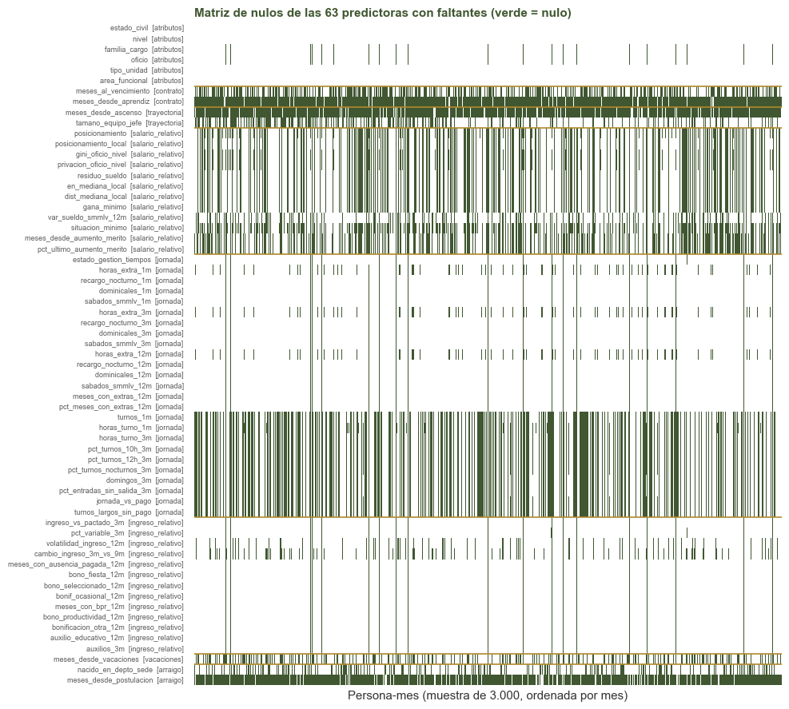
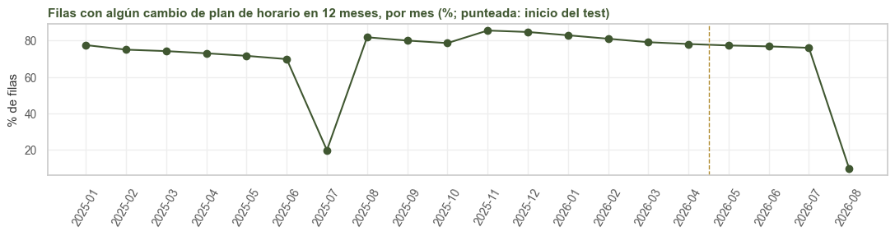
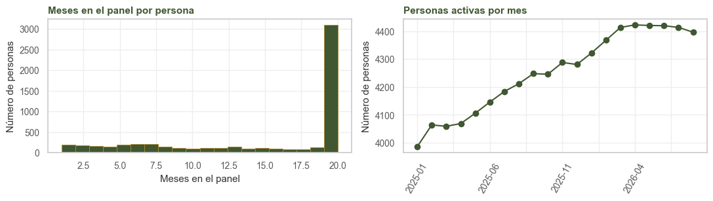

1. Datos#
Alcance
Este capítulo describe el panel completo: tamaño, estructura, diccionario y conteos de faltantes.
Todo lo que depende del objetivo o fija un umbral (tasas por patrón de faltante, vallas de atípicos,
eventos por parámetro) se calcula solo con el entrenamiento (enero de 2025 a abril de 2026), con la
partición del capítulo 2 (comun.particion).
1.1. Problema de investigación#
¿Se puede estimar, con la información disponible el día 1 de cada mes, la probabilidad de que un trabajador renuncie voluntariamente durante ese mes? Es un problema de clasificación binaria sobre un panel persona-mes, con un evento raro (alrededor del 1 % de los meses) y una dimensión temporal: el modelo se entrena con meses pasados y se evalúa sobre meses futuros.
1.2. Justificación#
La rotación voluntaria tiene un costo directo (selección, inducción, curva de aprendizaje) y se concentra en las operaciones de campo y de planta. Un puntaje mensual permite ordenar a quién mirar primero. Además, el conjunto plantea las dificultades que el curso pide tratar: un evento raro, un panel con entidades repetidas, una dimensión temporal, fugas de información posibles en la fuente, categóricas de alta cardinalidad y, en esta versión, 87 variables de historia laboral con faltantes estructurales. Supera con holgura el mínimo de 20.000 observaciones.
1.3. Fuente y licencia#
Los datos provienen del sistema de nómina y de gestión humana de un grupo agroindustrial colombiano (líneas de palma, banano, industrial, transporte, puerto y ganadería): registro de personal y de estados del trabajador, historia de contratos, sueldos pactados, nómina pagada, registro de tiempos, marcaciones biométricas, registro de novedades (licencias, capacitación, compensatorios), vacaciones, postulaciones internas y solicitudes de cesantías.
Licencia: uso académico autorizado por la empresa, no redistribuible. No hay enlace público. La
base se entrega a la universidad como CSV anonimizado por el canal del curso, no en el repositorio;
el libro lee su ruta de la variable de entorno PANEL_ROTACION (comun.py).
1.4. Construcción del panel#
Unidad: persona × mes. La persona se identifica por su documento, normalizado, y no por registro de personal, porque una misma persona puede tener varios a lo largo del tiempo (traslados entre sociedades, reingresos). El documento nunca sale de la extracción: se reemplaza por un entero asignado al azar.
Pertenencia al mes: la persona está en el panel en el mes t si el registro de estados del trabajador la muestra activa algún día de ese mes, y no según una foto del día 1, que perdería a quien sale entre el 28 y el 31 (recuadro de abajo).
Episodios laborales: una ausencia de al menos un mes abre un episodio nuevo. Un traslado entre sociedades sin pausa no lo abre.
Objetivo:
y_renuncia = 1en el último mes de un episodio que termina por renuncia voluntaria. Las otras salidas (despido, fin de contrato, pensión, fallecimiento, mutuo acuerdo) valen 0 en su último mes, y después la persona sale del panel: estuvo en riesgo y no renunció (riesgos competitivos). Una renuncia registrada cuando ya existía una decisión de no renovar el contrato cuenta como no renovación, porque la empresa ya había decidido terminarlo (capítulo 2).Renuncia administrativa: renuncia registrada tras la cual la persona sigue al mes siguiente con otro registro de personal (un traslado). No es una salida (
y = 0).Exclusiones: aprendices, vicepresidencia y presidencia (pocas personas, identificables), contratos de obra o labor, el mes de salida de los casos con etiqueta dudosa (salida sin registro, terminación en periodo de prueba) y las personas con una edad al ingreso fuera de 18 a 70 años, que delata una fecha de nacimiento mal registrada.
Momento de medición: los atributos corresponden al día 1 del mes t (o al primer día activo, si la persona ingresa a mitad de mes). El cargo entra con un mes de rezago, porque se vacía en el mes de salida (capítulo 6). La nómina, las marcaciones y las novedades entran con los cierres hasta t − 1, que son los conocidos el día 1 de t; la licencia no remunerada y las vacaciones tomadas, con dos meses de rezago. La columna
disponibledel diccionario lo dice variable por variable.Puesto: los textos de cargo, función, departamento y centro de costo (cientos de valores) se descomponen en ejes sin repetición:
nivel,familia_cargo,oficio,tipo_unidad,area_funcionalyproceso_planta. Los textos originales no están en el panel.Antigüedad reconocida:
antig_meseses la antigüedad que reconoce la empresa (la fecha de antigüedad del sistema de nómina), con continuidad en los traslados entre sociedades; una salida real seguida de recontratación sí la reinicia.
Efecto de las reglas de construcción
Preaviso de no renovación: 85 renuncias registradas con un preaviso previo cuentan como no renovación y no como renuncia; 19 de ellas caen en el test (capítulo 2).
Salidas de fin de mes: medir la pertenencia por la actividad del mes, y no por la foto del día 1, captura 30 renuncias con retiro entre el 28 y el 31 (6 en el test), que de otro modo no tendrían mes de salida.
Edad al ingreso: la regla de 18 a 70 años excluye 7 personas (121 filas, ninguna renuncia).
Códigos: sociedad (S01 a S22) y ubicación (U001 a U057) se asignan al azar, no por tamaño.
proceso_plantaqueda en cinco grupos ytipo_retiroen tres.Variables: a los 18 atributos se suman 92 columnas de historia laboral en ocho bloques; cinco se descartan (sección de duplicados y valores inconsistentes) y quedan 87.
import sys
import warnings
import numpy as np
import pandas as pd
import matplotlib.pyplot as plt
import seaborn as sns
from sklearn.preprocessing import OneHotEncoder
sys.path.insert(0, '.')
warnings.filterwarnings('ignore')
from comun import (cargar, particion, estilo, tasa_ic, OBJETIVO, NUM, BIN, CAT, CAT_BASE, NUM_BASE,
PREDICTORAS, FUERA, BLOQUE, BLOQUES, BASE, HISTORIA, SEMILLA, VERDE, ORO, GRIS, BORDE)
estilo()
pd.set_option('display.width', 160)
pd.set_option('display.max_colwidth', 110)
pd.set_option('display.max_rows', 200)
p = cargar()
tr, te = particion(p)
n_ren = int(p[OBJETIVO].sum())
n_no = int((p[OBJETIVO] == 0).sum())
print(f'filas: {len(p):,} | personas: {p.persona_id.nunique():,} | meses: {p.mes.nunique()} '
f'({p.mes.min()} a {p.mes.max()}) | columnas: {p.shape[1]}')
print(f'predictoras: {len(PREDICTORAS)} ({len(BASE)} atributos + {len(HISTORIA)} de historia laboral) | '
f'descartadas en este capítulo: {len(FUERA)} {FUERA}')
print(f'clase positiva: {n_ren} renuncias frente a {n_no:,} no renuncias (1 a {n_no / n_ren:.0f}); '
f'prevalencia {100 * p[OBJETIVO].mean():.2f} %')
print('evento:', p.evento.value_counts().to_dict())
filas: 85,068 | personas: 5,738 | meses: 20 (2025-01 a 2026-08) | columnas: 116
predictoras: 105 (18 atributos + 87 de historia laboral) | descartadas en este capítulo: 5 ['contrato_fijo', 'horas_bajo_legal', 'cambios_plan_12m', 'horas_diarias_teoricas', 'plan_horario']
clase positiva: 837 renuncias frente a 84,231 no renuncias (1 a 101); prevalencia 0.98 %
evento: {'ninguno': 83634, 'renuncia': 837, 'otra_salida': 561, 'renuncia_administrativa': 36}
El panel tiene 85.068 filas de 5.738 personas en 20 meses, y 116 columnas: el identificador, el
mes, 110 candidatas a predictora (105 tras descartar cinco), una columna que solo sirve para la
sensibilidad del objetivo (preaviso_no_renovacion) y tres que describen el desenlace. Hay una renuncia por cada 101 meses
sin renuncia. Las 36 renuncias administrativas son traslados y no cuentan como salida.
1.4.1. Por qué una fila por persona y mes#
El panel persona-mes es la forma habitual de un modelo de riesgo en tiempo discreto (Allison, 1982; Singer y Willett, 2003). Para la persona i en el mes t, el riesgo es la probabilidad de renunciar en ese mes dado que sigue activa al inicio:
La verosimilitud del panel es
donde \(R_i\) son los meses en que la persona i estuvo en riesgo. Es la misma verosimilitud de un modelo de supervivencia con censura: quien sigue activa al final de la ventana aporta sus meses sin renuncia, y quien sale por otra causa deja de aportar desde su salida. Como cada episodio tiene a lo sumo una renuncia, el producto sobre sus meses es la probabilidad de su historia completa, y que una persona aporte varias filas no sesga la estimación. Sí puede hacer optimistas los intervalos que tratan las filas como independientes, si hay diferencias entre personas que las variables no recogen (sección de entidades, más abajo). La probabilidad de seguir activa k meses es \(S_{ik} = \prod_{t=1}^{k} (1 - h_{it})\).
Se prefiere a una fila por persona, con la etiqueta «renunció o no», por cuatro razones:
Tiempo de exposición. Las personas se observan entre 1 y 20 meses. Con una fila por persona, quien estuvo 3 meses tuvo menos oportunidad de renunciar que quien estuvo 20, y la etiqueta mezcla el riesgo con el tiempo de observación. Con una tasa de 1 % mensual, la probabilidad de renunciar en 3 meses es 1 − 0,99³ ≈ 3 % y en 16 meses 1 − 0,99¹⁶ ≈ 15 %, sin que el riesgo cambie. En el panel cada fila vale un mes.
Variables que cambian. Edad, antigüedad, contrato, sueldo relativo, jornada y vacaciones pendientes cambian de un mes a otro. Una fila por persona obliga a elegir un momento y descarta el resto.
Un reloj común. Si los activos se describen en el último mes y los que renunciaron en su mes de salida, las dos poblaciones se miden en momentos distintos, y quien se fue no pudo seguir acumulando antigüedad: «los que renuncian tienen menos antigüedad» quedaría construido por el diseño. En el panel todas las variables se miden con lo conocido al inicio del mes, antes del desenlace. Por la misma razón no se usa el número total de meses que duró cada persona, que solo se conoce cuando termina el episodio.
El corte transversal es un caso particular. La versión válida de una fila por persona toma a las activas en una fecha y define y como la renuncia en los k meses siguientes. Usa las variables de un solo mes y una ventana elegida a mano, y la foto del último mes no sirve para entrenar porque su desenlace todavía no ocurrió. El panel usa todos los meses y da el riesgo de cualquier mes con un solo modelo.
Estructura: unidad de observación persona-mes, nivel de agregación mensual, tipo panel (longitudinal) desbalanceado: cada persona entra y sale en meses distintos. No hay componente espacial: la ubicación es un código de sede, sin coordenadas.
1.5. Diccionario#
El diccionario completo está en diccionario.csv (una fila por columna del panel: nombre legible,
bloque, tipo, unidad, significado y momento en que se conoce). La tabla lo muestra agrupado por
bloque, una tabla por bloque, con el número de valores distintos y el porcentaje de nulos calculados
sobre el panel. Las cinco columnas descartadas aparecen en su propio grupo, con el motivo al inicio
del significado. Al final de la sección va la tabla completa, plegada.
dic = pd.read_csv('diccionario.csv')
assert set(dic.variable) == set(p.columns) and len(dic) == p.shape[1]
dic['distintos'] = dic.variable.map(p.nunique())
dic['% nulos'] = dic.variable.map(100 * p.isna().mean()).round(1)
orden_bloques = ['identificador', 'atributos'] + list(BLOQUES) + ['descartada', 'sensibilidad', 'desenlace', 'objetivo']
dic['bloque'] = pd.Categorical(dic.bloque, orden_bloques, ordered=True)
COLS_DIC = ['variable', 'nombre', 'tipo', 'unidad', 'distintos', '% nulos', 'significado', 'disponible']
ESTILO_DIC = [{'selector': 'th, td', 'props': [('text-align', 'left'), ('vertical-align', 'top'), ('font-size', '0.8em')]},
{'selector': 'td.col6', 'props': [('min-width', '420px'), ('white-space', 'normal')]},
{'selector': 'td.col1, td.col7', 'props': [('min-width', '160px'), ('white-space', 'normal')]}]
from IPython.display import display, Markdown
for b, g in dic.sort_values('bloque', kind='stable').groupby('bloque', observed=True):
display(Markdown(f'**Bloque: {b}** ({len(g)} columnas)'))
display(g[COLS_DIC].style.hide(axis='index').format({'% nulos': '{:.1f}'}).set_table_styles(ESTILO_DIC))
Bloque: identificador (2 columnas)
| variable | nombre | tipo | unidad | distintos | % nulos | significado | disponible |
|---|---|---|---|---|---|---|---|
| persona_id | persona | identificador | código | 5738 | 0.0 | persona seudonimizada: entero asignado al azar, sin orden ni relación con documentos ni registros de personal; agrupa las filas de la misma persona y no es predictora | fijo |
| mes | mes | tiempo | AAAA-MM | 20 | 0.0 | mes t de la fila; todas las variables se miden con lo que se sabía al inicio de t (o antes, si llevan rezago) | fijo |
Bloque: atributos (18 columnas)
| variable | nombre | tipo | unidad | distintos | % nulos | significado | disponible |
|---|---|---|---|---|---|---|---|
| edad | edad (años) | numérica discreta | años | 58 | 0.0 | edad cumplida el día 1 del mes, desde la fecha de nacimiento del registro de personal | día 1 del mes t |
| antig_meses | antigüedad reconocida (meses) | numérica discreta | meses | 426 | 0.0 | antigüedad reconocida por la empresa: meses calendario desde la fecha de antigüedad del sistema de nómina, con continuidad en los traslados entre sociedades; una salida real seguida de recontratación la reinicia | día 1 del mes t |
| primer_mes | primer mes del episodio | binaria | 0/1 | 2 | 0.0 | 1 en el primer mes de un episodio laboral (no hay mes anterior en la empresa) | día 1 del mes t |
| reingreso | reingreso | binaria | 0/1 | 2 | 0.0 | 1 si la persona tuvo un episodio laboral anterior en el grupo (historia desde 2010) | día 1 del mes t |
| traslado_12m | traslado en 12 meses | binaria | 0/1 | 2 | 0.0 | 1 si cambió de sociedad sin interrupción en alguno de los 12 meses anteriores | día 1 del mes t |
| sociedad | sociedad | categórica | código S01..S22 | 22 | 0.0 | empresa del grupo que paga la nómina; código asignado al azar | día 1 del mes t |
| linea | línea de negocio | categórica | categoría | 6 | 0.0 | línea de negocio de la sociedad: palma, banano, industrial, transporte, puerto, ganadería | día 1 del mes t |
| ubicacion | ubicación | categórica | código U001..U057 | 57 | 0.0 | ubicación de trabajo (finca, planta u oficina); código asignado al azar | día 1 del mes t |
| genero | género | categórica | categoría | 2 | 0.0 | género registrado, con las correcciones verificadas | día 1 del mes t |
| estado_civil | estado civil | categórica | categoría | 4 | 0.0 | unión libre, soltero, casado u otro | día 1 del mes t |
| contrato | tipo de contrato | categórica | categoría | 2 | 0.0 | término fijo o indefinido, según la historia de contratos vigente ese día | día 1 del mes t |
| nivel | nivel del cargo | categórica | categoría ordenada | 6 | 0.0 | nivel jerárquico de la función: operativo, auxiliar, asistente, coordinador, jefe, dirección o gerencia | día 1 del mes t |
| familia_cargo | familia de cargo | categórica | categoría | 17 | 2.3 | tipo de trabajo, derivado del cargo del mes anterior; nulo en el primer mes del episodio | mes t-1 (cargo del mes anterior) |
| oficio | oficio | categórica | categoría | 41 | 2.3 | cargo del mes anterior sin palabras de nivel (en campo, la labor); 41 oficios; nulo en el primer mes del episodio | mes t-1 (cargo del mes anterior) |
| tipo_unidad | tipo de unidad | categórica | categoría | 5 | 0.0 | finca de palma o banano, hacienda ganadera, planta industrial o área funcional (oficina), desde la unidad organizativa | día 1 del mes t |
| area_funcional | área funcional | categórica | categoría | 14 | 0.0 | área de oficina de la unidad organizativa; no_aplica en fincas y plantas | día 1 del mes t |
| proceso_planta | proceso de planta | categórica | categoría | 5 | 0.0 | proceso de planta desde el nombre del centro de costo, agrupado en extracción, transformación, empaque y servicios y otros; no_aplica fuera de planta | día 1 del mes t |
| tipo_costos | tipo de personal | categórica | categoría | 3 | 0.0 | administrativo, operativo directo u operativo indirecto, según la regla contable del centro de costo | día 1 del mes t |
Bloque: contrato (6 columnas)
| variable | nombre | tipo | unidad | distintos | % nulos | significado | disponible |
|---|---|---|---|---|---|---|---|
| meses_al_vencimiento | meses al vencimiento del contrato | numérica discreta | meses | 25 | 46.4 | meses calendario hasta la fecha de fin del contrato fijo vigente (0 = vence en el mes t; negativo = fecha ya pasada sin renovación registrada); nulo si el contrato no es fijo | día 1 del mes t |
| n_renovaciones | renovaciones del contrato fijo | numérica discreta | conteo | 15 | 0.0 | fechas de fin distintas de los contratos fijos del episodio actual iniciados antes de t, menos una; 0 si el contrato no es fijo | día 1 del mes t |
| meses_desde_cambio_contrato | meses desde el último cambio de contrato | numérica discreta | meses | 280 | 0.0 | meses desde el inicio del tramo de contrato vigente (renovación, prórroga o cambio de tipo) | día 1 del mes t |
| fue_aprendiz | fue aprendiz | binaria | 0/1 | 2 | 0.0 | 1 si la persona tuvo meses como aprendiz antes de t | día 1 del mes t |
| meses_desde_aprendiz | meses desde el aprendizaje | numérica discreta | meses | 197 | 95.1 | meses desde el último mes como aprendiz; nulo si nunca lo fue | día 1 del mes t |
| ingreso_a_mitad | ingreso a mitad de mes | binaria | 0/1 | 2 | 0.0 | 1 si el primer día activo del mes no es el día 1 (ingreso o reingreso dentro del mes) | día 1 del mes t |
Bloque: trayectoria (8 columnas)
| variable | nombre | tipo | unidad | distintos | % nulos | significado | disponible |
|---|---|---|---|---|---|---|---|
| meses_en_posicion | meses en la posición | numérica discreta | meses | 200 | 0.0 | meses seguidos en la misma posición dentro del episodio (1 = cambió este mes o es el primer mes) | día 1 del mes t |
| meses_en_funcion | meses en la función | numérica discreta | meses | 167 | 0.0 | meses seguidos en la misma función dentro del episodio | día 1 del mes t |
| meses_desde_ascenso | meses desde el último ascenso | numérica discreta | meses (tope 12) | 13 | 91.3 | meses desde el último ascenso (subida de nivel, o cambio de posición o función con aumento de al menos 5 puntos sobre el reajuste del mínimo) del episodio, desde 2022; topada en 12 (12 = al menos 12); nulo si no hubo ninguno | día 1 del mes t |
| n_ascensos_24m | ascensos en 24 meses | numérica discreta | conteo | 4 | 0.0 | ascensos del episodio en los 24 meses que terminan en t; no cuentan las reclasificaciones masivas ni la salida del aprendizaje | día 1 del mes t |
| n_movimientos_laterales_12m | movimientos laterales en 12 meses | numérica discreta | conteo | 4 | 0.0 | cambios de posición en 12 meses que no son ascenso ni descenso (sin reclasificaciones masivas) | día 1 del mes t |
| es_jefe_formal | es jefe formal | binaria | 0/1 | 2 | 0.0 | 1 si la persona ocupa la posición que dirige su unidad organizativa | día 1 del mes t |
| personas_a_cargo | personas a cargo | numérica discreta | personas | 124 | 0.0 | personas que tienen a la persona como jefe inmediato en el mes (según la relación jefe-colaborador registrada) | día 1 del mes t |
| tamano_equipo_jefe | tamaño del equipo del jefe | numérica discreta | personas | 126 | 32.9 | personas que comparten el mismo jefe inmediato en el mes; nulo si la persona no tiene evaluación que identifique al jefe (sobre todo ingresos recientes) | día 1 del mes t |
Bloque: salario_relativo (14 columnas)
| variable | nombre | tipo | unidad | distintos | % nulos | significado | disponible |
|---|---|---|---|---|---|---|---|
| tipo_salario | tipo de salario | categórica | categoría | 3 | 0.0 | concepto del sueldo pactado vigente: básico, a destajo o integral | día 1 del mes t |
| posicionamiento | posicionamiento salarial | numérica continua | razón | 954 | 38.8 | sueldo / mediana del sueldo del mismo oficio y nivel en el mes (1 = en la mediana); solo sueldo básico y grupos de 5 o más | día 1 del mes t |
| posicionamiento_local | posicionamiento salarial local | numérica continua | razón | 1066 | 34.5 | sueldo / mediana del grupo más cercano con 5 o más personas en el mes (oficio, nivel y departamento; si no, nivel y departamento; oficio y nivel; nivel); solo sueldo básico | día 1 del mes t |
| gini_oficio_nivel | Gini del oficio y nivel | numérica continua | índice 0-1 | 632 | 38.6 | coeficiente de Gini del sueldo básico en el oficio y nivel en el mes (igual para todo el grupo); grupos de 5 o más | día 1 del mes t |
| privacion_oficio_nivel | privación relativa | numérica continua | índice | 2266 | 38.6 | privación relativa de Yitzhaki: media de lo que ganan de más los compañeros del mismo oficio y nivel, sobre la media del grupo | día 1 del mes t |
| residuo_sueldo | residuo del sueldo | numérica continua | log | 6233 | 34.5 | residuo de log(sueldo) sobre oficio x nivel, sociedad, ubicación y banda de antigüedad, ajustado mes a mes; negativo = pagado de menos dado el puesto | día 1 del mes t |
| en_mediana_local | en la mediana local | binaria | 0/1 | 2 | 34.5 | 1 si el sueldo es exactamente la mediana de su grupo local (cargo de tabla) | día 1 del mes t |
| dist_mediana_local | distancia a la mediana local | numérica continua | razón | 711 | 34.5 | |posicionamiento_local - 1| | día 1 del mes t |
| gana_minimo | gana el salario mínimo | binaria | 0/1 | 2 | 34.5 | 1 si el sueldo básico es igual al salario mínimo del año (tolerancia 0,5 %) | día 1 del mes t |
| var_sueldo_smmlv_12m | variación del sueldo en mínimos (12 m) | numérica continua | proporción | 937 | 26.0 | sueldo en salarios mínimos frente al de 12 meses antes, mismo tipo de concepto; negativo = creció menos que el mínimo | día 1 del mes t |
| situacion_minimo | situación frente al mínimo | categórica | categoría | 4 | 51.0 | ya_en_minimo, absorbida (ganaba más y hoy gana el mínimo), comprimida (gana más del mínimo pero menos mínimos que hace 12 meses) o igual_o_subio; solo sueldo básico con sueldo de 12 meses antes | día 1 del mes t |
| meses_desde_aumento_merito | meses desde el último aumento por mérito | numérica discreta | meses | 204 | 45.7 | meses desde el último aumento por mérito (fuera de enero, o en enero por encima del reajuste del mínimo más 1 punto); nulo si no hay ninguno | día 1 del mes t |
| pct_ultimo_aumento_merito | último aumento por mérito | numérica continua | proporción | 396 | 45.7 | tamaño del último aumento por mérito (0,10 = 10 %) | día 1 del mes t |
| n_aumentos_merito_24m | aumentos por mérito en 24 meses | numérica discreta | conteo | 6 | 0.0 | aumentos por mérito en los 24 meses anteriores | día 1 del mes t |
Bloque: jornada (27 columnas)
| variable | nombre | tipo | unidad | distintos | % nulos | significado | disponible |
|---|---|---|---|---|---|---|---|
| estado_gestion_tiempos | situación del control de tiempos | categórica | código | 3 | 2.1 | código de estado de la gestión de tiempos en el registro de tiempos (categórica) | día 1 del mes t |
| horas_extra_1m | horas extra (mes anterior) | numérica continua | horas | 1462 | 9.5 | horas extra pagadas (diurnas, nocturnas y festivas); vacío si la persona no es elegible para horas extra | cierre de nómina del mes t-1 |
| recargo_nocturno_1m | recargo nocturno (mes anterior) | numérica continua | horas | 2761 | 2.2 | horas con recargo nocturno pagadas | cierre de nómina del mes t-1 |
| dominicales_1m | dominicales y festivos (mes anterior) | numérica continua | cantidad | 1294 | 2.2 | dominicales y festivos laborados pagados (cantidad del concepto) | cierre de nómina del mes t-1 |
| sabados_smmlv_1m | recargo de sábados (mes anterior, mínimos) | numérica continua | salarios mínimos | 60 | 2.2 | importe del recargo por sábados en salarios mínimos del año (el concepto no trae cantidad) | cierre de nómina del mes t-1 |
| horas_extra_3m | horas extra (media 3 m) | numérica continua | horas por mes | 2953 | 9.5 | media mensual de horas extra pagadas en los 3 meses anteriores; vacío si no es elegible | cierres de nómina de t-3 a t-1 |
| recargo_nocturno_3m | recargo nocturno (media 3 m) | numérica continua | horas por mes | 5960 | 2.2 | media mensual de horas con recargo nocturno en los 3 meses anteriores | cierres de nómina de t-3 a t-1 |
| dominicales_3m | dominicales y festivos (media 3 m) | numérica continua | cantidad por mes | 3026 | 2.2 | media mensual de dominicales y festivos pagados en los 3 meses anteriores | cierres de nómina de t-3 a t-1 |
| sabados_smmlv_3m | recargo de sábados (media 3 m, mínimos) | numérica continua | salarios mínimos por mes | 57 | 2.2 | media mensual del recargo por sábados en los 3 meses anteriores | cierres de nómina de t-3 a t-1 |
| horas_extra_12m | horas extra (media 12 m) | numérica continua | horas por mes | 7201 | 9.5 | media mensual de horas extra en los 12 meses anteriores; vacío si no es elegible | cierres de nómina de t-12 a t-1 |
| recargo_nocturno_12m | recargo nocturno (media 12 m) | numérica continua | horas por mes | 12261 | 2.2 | media mensual de horas con recargo nocturno en los 12 meses anteriores | cierres de nómina de t-12 a t-1 |
| dominicales_12m | dominicales y festivos (media 12 m) | numérica continua | cantidad por mes | 7896 | 2.2 | media mensual de dominicales y festivos en los 12 meses anteriores | cierres de nómina de t-12 a t-1 |
| sabados_smmlv_12m | recargo de sábados (media 12 m, mínimos) | numérica continua | salarios mínimos por mes | 53 | 2.2 | media mensual del recargo por sábados en los 12 meses anteriores | cierres de nómina de t-12 a t-1 |
| meses_con_extras_12m | meses con extras o recargos (12 m) | numérica discreta | meses | 13 | 2.2 | meses de los 12 anteriores con algún pago de horas extra, recargo, dominical o sábado | cierres de nómina de t-12 a t-1 |
| pct_meses_con_extras_12m | % de meses con extras (12 m) | numérica continua | % | 47 | 2.2 | meses con extras sobre los meses con nómina de la ventana (corrige que los nuevos tienen pocos meses detrás) | cierres de nómina de t-12 a t-1 |
| elegible_horas_extra | elegible para horas extra | binaria | 0/1 | 2 | 0.0 | 1 si cobró algún extra o recargo en 12 meses o no es personal administrativo (dirección, confianza y manejo no tienen horas extra por ley) | cierres de nómina de t-12 a t-1 |
| turnos_1m | turnos marcados (mes anterior) | numérica discreta | turnos | 32 | 41.6 | turnos del mes anterior en marcaciones biométricas (entrada seguida de salida a 20 h o menos); vacío si no marca | marcaciones del mes t-1 |
| horas_turno_1m | horas por turno (mes anterior) | numérica continua | horas | 1314 | 44.0 | horas medias por turno marcado en el mes anterior (incluye el descanso de almuerzo) | marcaciones del mes t-1 |
| horas_turno_3m | horas por turno (3 m) | numérica continua | horas | 1306 | 42.5 | horas medias por turno marcado en los 3 meses anteriores | marcaciones de t-3 a t-1 |
| pct_turnos_10h_3m | % de turnos de 10 h o más (3 m) | numérica continua | % | 906 | 42.5 | porcentaje de turnos marcados de 10 horas o más en los 3 meses anteriores | marcaciones de t-3 a t-1 |
| pct_turnos_12h_3m | % de turnos de 12 h o más (3 m) | numérica continua | % | 889 | 42.5 | porcentaje de turnos marcados de 12 horas o más en los 3 meses anteriores | marcaciones de t-3 a t-1 |
| pct_turnos_nocturnos_3m | % de turnos nocturnos (3 m) | numérica continua | % | 511 | 42.5 | porcentaje de turnos nocturnos en los 3 meses anteriores | marcaciones de t-3 a t-1 |
| domingos_3m | domingos marcados por mes (3 m) | numérica continua | días por mes | 15 | 41.6 | domingos con turno marcado, media mensual de los 3 meses anteriores | marcaciones de t-3 a t-1 |
| pct_entradas_sin_salida_3m | % de entradas sin salida (3 m) | numérica continua | % | 847 | 41.6 | porcentaje de marcaciones de entrada sin salida emparejada en los 3 meses anteriores | marcaciones de t-3 a t-1 |
| marca_biometrico | marca en biométrico | binaria | 0/1 | 2 | 0.0 | 1 si la persona tiene marcaciones biométricas el mes anterior (solo las sedes con biométrico) | marcaciones del mes t-1 |
| jornada_vs_pago | jornada frente a pago de extras | categórica | categoría | 9 | 42.5 | turnos de 10 h o más (cortos < 10 %, algunos 10-30 %, largos >= 30 %) cruzado con si cobra horas extra (cobra, no_cobra, no_aplica); vacío si no marca | marcaciones de t-3 a t-1 y nómina |
| turnos_largos_sin_pago | turnos largos sin pago de extras | binaria | 0/1 | 2 | 42.5 | 1 si 30 % o más de los turnos son de 10 h o más y, siendo elegible, no cobra horas extra; vacío si no marca | marcaciones de t-3 a t-1 y nómina |
Bloque: ingreso_relativo (13 columnas)
| variable | nombre | tipo | unidad | distintos | % nulos | significado | disponible |
|---|---|---|---|---|---|---|---|
| ingreso_vs_pactado_3m | ingreso frente al pactado (3 m) | numérica continua | razón | 2388 | 2.2 | devengado ordinario medio de los 3 meses anteriores / sueldo pactado (ambos en salarios mínimos); 1 = gana lo pactado | cierres de nómina de t-3 a t-1 |
| pct_variable_3m | % variable del ingreso (3 m) | numérica continua | % | 30007 | 2.3 | parte variable por labor (destajo, tareas) sobre el devengado ordinario, 3 meses anteriores; acotada a 0-100 | cierres de nómina de t-3 a t-1 |
| volatilidad_ingreso_12m | volatilidad del ingreso (12 m) | numérica continua | coeficiente de variación | 1243 | 11.6 | desviación estándar / media del devengado ordinario de los 12 meses anteriores (con 6 o más meses) | cierres de nómina de t-12 a t-1 |
| cambio_ingreso_3m_vs_9m | cambio del ingreso, 3 m frente a 9 m | numérica continua | % | 38928 | 16.8 | devengado ordinario medio de los últimos 3 meses frente a los 9 anteriores (base de al menos 6 meses y 0,3 mínimos) | cierres de nómina de t-12 a t-1 |
| meses_con_ausencia_pagada_12m | meses con ausencia pagada (12 m) | numérica discreta | meses | 13 | 2.2 | meses de los 12 anteriores con algún pago por ausencia remunerada | cierres de nómina de t-12 a t-1 |
| bono_fiesta_12m | bono de fin de año (12 m) | binaria | 0/1 | 2 | 2.2 | 1 si recibió el bono de fin de año en los 12 meses anteriores | cierres de nómina de t-12 a t-1 |
| bono_seleccionado_12m | bono de fin de año adicional (12 m, mínimos) | numérica continua | salarios mínimos | 132 | 2.2 | bono adicional de fin de año, suma de 12 meses | cierres de nómina de t-12 a t-1 |
| bonif_ocasional_12m | bonificación ocasional (12 m, mínimos) | numérica continua | salarios mínimos | 103 | 2.2 | bono ocasional, suma de 12 meses | cierres de nómina de t-12 a t-1 |
| meses_con_bpr_12m | meses con bonificación por resultado (12 m) | numérica discreta | meses | 13 | 2.2 | meses de los 12 anteriores con bonificación por resultado asignada a la persona | cierres de nómina de t-12 a t-1 |
| bono_productividad_12m | bono de productividad (12 m, mínimos) | numérica continua | salarios mínimos | 1907 | 2.2 | bono de productividad, suma de 12 meses | cierres de nómina de t-12 a t-1 |
| bonificacion_otra_12m | otras bonificaciones (12 m, mínimos) | numérica continua | salarios mínimos | 3853 | 2.2 | resto de bonificaciones pagadas, suma de 12 meses | cierres de nómina de t-12 a t-1 |
| auxilio_educativo_12m | auxilio educativo (12 m) | binaria | 0/1 | 2 | 2.2 | 1 si recibió auxilio educativo en los 12 meses anteriores | cierres de nómina de t-12 a t-1 |
| auxilios_3m | auxilios no salariales (media 3 m, mínimos) | numérica continua | salarios mínimos por mes | 1395 | 2.2 | auxilios no salariales, media mensual de los 3 meses anteriores (negativo = reversión) | cierres de nómina de t-3 a t-1 |
Bloque: ausencias (7 columnas)
| variable | nombre | tipo | unidad | distintos | % nulos | significado | disponible |
|---|---|---|---|---|---|---|---|
| dias_licencia_no_remunerada_3m_r2 | días de licencia no remunerada (3 m, rezago 2) | numérica continua | días | 88 | 0.0 | días de licencia no remunerada en los 3 meses que terminan en t-2 (rezago doble: parte de la licencia del mes previo a la salida es trámite de la salida) | registro de novedades de t-4 a t-2 |
| dias_licencia_no_remunerada_12m_r2 | días de licencia no remunerada (12 m, rezago 2) | numérica continua | días | 130 | 0.0 | días de licencia no remunerada en los 12 meses que terminan en t-2 | registro de novedades de t-13 a t-2 |
| licencias_no_remuneradas_12m | licencias no remuneradas (12 m) | numérica discreta | conteo | 39 | 0.0 | licencias no remuneradas iniciadas en los 12 meses anteriores | registro de novedades de t-12 a t-1 |
| dias_licencia_remunerada_12m | días de licencia remunerada (12 m) | numérica continua | días | 92 | 0.0 | días de licencia remunerada en los 12 meses anteriores | registro de novedades de t-12 a t-1 |
| dias_capacitacion_12m | días de capacitación (12 m) | numérica continua | días | 14 | 0.0 | días registrados como capacitación en los 12 meses anteriores | registro de novedades de t-12 a t-1 |
| dias_compensatorio_12m | días compensatorios (12 m) | numérica continua | días | 84 | 0.0 | días compensatorios en los 12 meses anteriores | registro de novedades de t-12 a t-1 |
| dia_familia_12m | días de la familia (12 m) | numérica discreta | conteo | 5 | 0.0 | días de la familia tomados en los 12 meses anteriores (beneficio legal semestral) | registro de novedades de t-12 a t-1 |
Bloque: vacaciones (5 columnas)
| variable | nombre | tipo | unidad | distintos | % nulos | significado | disponible |
|---|---|---|---|---|---|---|---|
| meses_desde_vacaciones | meses desde las últimas vacaciones | numérica discreta | meses (2 a 12) | 11 | 33.9 | meses desde el último mes con pago de vacaciones en nómina (historia desde 2024), topada en 12; nulo si no hay vacaciones en la ventana | nómina hasta t-2 (rezago de dos meses) |
| dias_vacaciones_pendientes | vacaciones pendientes (días) | numérica continua | días hábiles | 213 | 0.0 | saldo de vacaciones: días causados menos disfrutados menos compensados en dinero antes del día 1 del mes (sin bajar de 0) | día 1 del mes t |
| periodos_vacaciones_pendientes | periodos de vacaciones pendientes | numérica discreta | periodos de 15 días | 8 | 0.0 | saldo de vacaciones / 15, redondeado hacia abajo | día 1 del mes t |
| vacaciones_acumuladas_2p | dos periodos de vacaciones acumulados | binaria | 0/1 | 2 | 0.0 | 1 si el saldo de vacaciones es de 30 días o más | día 1 del mes t |
| dias_vacaciones_compensadas_12m | vacaciones compensadas en dinero (12 m) | numérica continua | días | 74 | 0.0 | días de vacaciones pagados en dinero en los 12 meses anteriores (fecha aproximada) | día 1 del mes t |
Bloque: arraigo (7 columnas)
| variable | nombre | tipo | unidad | distintos | % nulos | significado | disponible |
|---|---|---|---|---|---|---|---|
| nacido_en_depto_sede | nacido en el departamento de la sede | binaria | 0/1 | 2 | 23.9 | 1 si el departamento de nacimiento es el de su sede (el de residencia más común en su ubicación); nulo si no hay dato de origen | perfil del trabajador (fijo) |
| postulaciones_internas_12m | postulaciones internas (12 m) | numérica discreta | conteo | 6 | 0.0 | postulaciones a vacantes internas abiertas en los 12 meses anteriores, estando ya en la empresa | antes del día 1 del mes t |
| requisicion_promocion_12m | promociones por requisición (12 m) | numérica discreta | conteo | 5 | 0.0 | promociones o cambios tramitados por requisición en los 12 meses anteriores | antes del día 1 del mes t |
| meses_desde_postulacion | meses desde la última postulación | numérica discreta | meses | 104 | 88.7 | meses desde la última postulación interna; nulo si nunca se postuló | antes del día 1 del mes t |
| cesantias_vivienda_12m | retiros de cesantías para vivienda (12 m) | numérica discreta | conteo | 10 | 0.0 | solicitudes de retiro de cesantías para vivienda en los 12 meses anteriores | antes del día 1 del mes t |
| cesantias_educacion_12m | retiros de cesantías para educación (12 m) | numérica discreta | conteo | 6 | 0.0 | solicitudes de retiro de cesantías para educación en los 12 meses anteriores | antes del día 1 del mes t |
| cesantias_vivienda_historico | retiros de cesantías para vivienda (histórico) | numérica discreta | conteo | 15 | 0.0 | solicitudes de retiro de cesantías para vivienda en toda la historia disponible | antes del día 1 del mes t |
Bloque: descartada (5 columnas)
| variable | nombre | tipo | unidad | distintos | % nulos | significado | disponible |
|---|---|---|---|---|---|---|---|
| contrato_fijo | contrato a término fijo | binaria | 0/1 | 2 | 0.0 | DESCARTADA (capítulo 1): idéntica a contrato fila a fila. 1 si el contrato vigente es a término fijo (repite la información de contrato) | día 1 del mes t |
| horas_bajo_legal | horas semanales bajo el máximo legal | numérica continua | horas | 3 | 2.1 | DESCARTADA (capítulo 1): vale 0 en el 99,98 % de las filas. máximo legal semanal del mes (Ley 2101 de 2021) menos las horas semanales teóricas | día 1 del mes t |
| cambios_plan_12m | cambios de plan de horario (12 m) | numérica discreta | conteo | 5 | 0.0 | DESCARTADA (capítulo 1): sigue el calendario de la reducción legal de la jornada (reasignaciones masivas de planes cada julio), no a la persona. cambios del plan de horario en los 12 meses que terminan en t | día 1 del mes t |
| horas_diarias_teoricas | horas diarias teóricas | numérica continua | horas | 3 | 2.1 | DESCARTADA (capítulo 5): sigue el calendario de la reducción legal de la jornada (46 a 44 horas semanales en jul-2025, 44 a 42 en jul-2026, dentro del test); no varía entre personas dentro de un mes. horas diarias del horario teórico vigente | día 1 del mes t |
| plan_horario | plan de horario | categórica | código | 19 | 2.1 | DESCARTADA (capítulo 5): sus códigos se reemplazan con cada escalón de la reducción legal de la jornada (jul-2025, jul-2026); sigue el calendario, no a la persona. plan de horario de trabajo teórico vigente en el registro de tiempos (19 planes) | día 1 del mes t |
Bloque: sensibilidad (1 columnas)
| variable | nombre | tipo | unidad | distintos | % nulos | significado | disponible |
|---|---|---|---|---|---|---|---|
| preaviso_no_renovacion | preaviso de no renovación | binaria | 0/1 | 2 | 0.0 | 1 si hay registrada, antes de t, una decisión de no renovar un contrato que termina en t o después; con preaviso la renuncia se reclasifica como no renovación, así que y = 0 por construcción: no es predictora, solo sensibilidad | día 1 del mes t |
Bloque: desenlace (2 columnas)
| variable | nombre | tipo | unidad | distintos | % nulos | significado | disponible |
|---|---|---|---|---|---|---|---|
| evento | evento del mes | categórica | categoría | 4 | 0.0 | ninguno, renuncia, otra_salida o renuncia_administrativa (traslado registrado como renuncia tras el cual la persona sigue el mes siguiente); describe el desenlace, no es predictora | fin del mes t |
| tipo_retiro | tipo de retiro | categórica | categoría | 3 | 99.3 | solo en las otras salidas: despido, fin_de_contrato u otra (pensión, fallecimiento, mutuo acuerdo); no es predictora | fin del mes t |
Bloque: objetivo (1 columnas)
| variable | nombre | tipo | unidad | distintos | % nulos | significado | disponible |
|---|---|---|---|---|---|---|---|
| y_renuncia | renuncia voluntaria | binaria | 0/1 | 2 | 0.0 | variable objetivo: 1 en el último mes de un episodio que termina por renuncia voluntaria (sin las no renovaciones con preaviso); 0 en el resto | fin del mes t |
La tabla completa, en una sola pieza (plegada):
dic.sort_values('bloque', kind='stable')[['bloque'] + COLS_DIC].style.hide(axis='index').format(
{'% nulos': '{:.1f}'}).set_table_styles(ESTILO_DIC)
Show code cell output
| bloque | variable | nombre | tipo | unidad | distintos | % nulos | significado | disponible |
|---|---|---|---|---|---|---|---|---|
| identificador | persona_id | persona | identificador | código | 5738 | 0.0 | persona seudonimizada: entero asignado al azar, sin orden ni relación con documentos ni registros de personal; agrupa las filas de la misma persona y no es predictora | fijo |
| identificador | mes | mes | tiempo | AAAA-MM | 20 | 0.0 | mes t de la fila; todas las variables se miden con lo que se sabía al inicio de t (o antes, si llevan rezago) | fijo |
| atributos | edad | edad (años) | numérica discreta | años | 58 | 0.0 | edad cumplida el día 1 del mes, desde la fecha de nacimiento del registro de personal | día 1 del mes t |
| atributos | antig_meses | antigüedad reconocida (meses) | numérica discreta | meses | 426 | 0.0 | antigüedad reconocida por la empresa: meses calendario desde la fecha de antigüedad del sistema de nómina, con continuidad en los traslados entre sociedades; una salida real seguida de recontratación la reinicia | día 1 del mes t |
| atributos | primer_mes | primer mes del episodio | binaria | 0/1 | 2 | 0.0 | 1 en el primer mes de un episodio laboral (no hay mes anterior en la empresa) | día 1 del mes t |
| atributos | reingreso | reingreso | binaria | 0/1 | 2 | 0.0 | 1 si la persona tuvo un episodio laboral anterior en el grupo (historia desde 2010) | día 1 del mes t |
| atributos | traslado_12m | traslado en 12 meses | binaria | 0/1 | 2 | 0.0 | 1 si cambió de sociedad sin interrupción en alguno de los 12 meses anteriores | día 1 del mes t |
| atributos | sociedad | sociedad | categórica | código S01..S22 | 22 | 0.0 | empresa del grupo que paga la nómina; código asignado al azar | día 1 del mes t |
| atributos | linea | línea de negocio | categórica | categoría | 6 | 0.0 | línea de negocio de la sociedad: palma, banano, industrial, transporte, puerto, ganadería | día 1 del mes t |
| atributos | ubicacion | ubicación | categórica | código U001..U057 | 57 | 0.0 | ubicación de trabajo (finca, planta u oficina); código asignado al azar | día 1 del mes t |
| atributos | genero | género | categórica | categoría | 2 | 0.0 | género registrado, con las correcciones verificadas | día 1 del mes t |
| atributos | estado_civil | estado civil | categórica | categoría | 4 | 0.0 | unión libre, soltero, casado u otro | día 1 del mes t |
| atributos | contrato | tipo de contrato | categórica | categoría | 2 | 0.0 | término fijo o indefinido, según la historia de contratos vigente ese día | día 1 del mes t |
| atributos | nivel | nivel del cargo | categórica | categoría ordenada | 6 | 0.0 | nivel jerárquico de la función: operativo, auxiliar, asistente, coordinador, jefe, dirección o gerencia | día 1 del mes t |
| atributos | familia_cargo | familia de cargo | categórica | categoría | 17 | 2.3 | tipo de trabajo, derivado del cargo del mes anterior; nulo en el primer mes del episodio | mes t-1 (cargo del mes anterior) |
| atributos | oficio | oficio | categórica | categoría | 41 | 2.3 | cargo del mes anterior sin palabras de nivel (en campo, la labor); 41 oficios; nulo en el primer mes del episodio | mes t-1 (cargo del mes anterior) |
| atributos | tipo_unidad | tipo de unidad | categórica | categoría | 5 | 0.0 | finca de palma o banano, hacienda ganadera, planta industrial o área funcional (oficina), desde la unidad organizativa | día 1 del mes t |
| atributos | area_funcional | área funcional | categórica | categoría | 14 | 0.0 | área de oficina de la unidad organizativa; no_aplica en fincas y plantas | día 1 del mes t |
| atributos | proceso_planta | proceso de planta | categórica | categoría | 5 | 0.0 | proceso de planta desde el nombre del centro de costo, agrupado en extracción, transformación, empaque y servicios y otros; no_aplica fuera de planta | día 1 del mes t |
| atributos | tipo_costos | tipo de personal | categórica | categoría | 3 | 0.0 | administrativo, operativo directo u operativo indirecto, según la regla contable del centro de costo | día 1 del mes t |
| contrato | meses_al_vencimiento | meses al vencimiento del contrato | numérica discreta | meses | 25 | 46.4 | meses calendario hasta la fecha de fin del contrato fijo vigente (0 = vence en el mes t; negativo = fecha ya pasada sin renovación registrada); nulo si el contrato no es fijo | día 1 del mes t |
| contrato | n_renovaciones | renovaciones del contrato fijo | numérica discreta | conteo | 15 | 0.0 | fechas de fin distintas de los contratos fijos del episodio actual iniciados antes de t, menos una; 0 si el contrato no es fijo | día 1 del mes t |
| contrato | meses_desde_cambio_contrato | meses desde el último cambio de contrato | numérica discreta | meses | 280 | 0.0 | meses desde el inicio del tramo de contrato vigente (renovación, prórroga o cambio de tipo) | día 1 del mes t |
| contrato | fue_aprendiz | fue aprendiz | binaria | 0/1 | 2 | 0.0 | 1 si la persona tuvo meses como aprendiz antes de t | día 1 del mes t |
| contrato | meses_desde_aprendiz | meses desde el aprendizaje | numérica discreta | meses | 197 | 95.1 | meses desde el último mes como aprendiz; nulo si nunca lo fue | día 1 del mes t |
| contrato | ingreso_a_mitad | ingreso a mitad de mes | binaria | 0/1 | 2 | 0.0 | 1 si el primer día activo del mes no es el día 1 (ingreso o reingreso dentro del mes) | día 1 del mes t |
| trayectoria | meses_en_posicion | meses en la posición | numérica discreta | meses | 200 | 0.0 | meses seguidos en la misma posición dentro del episodio (1 = cambió este mes o es el primer mes) | día 1 del mes t |
| trayectoria | meses_en_funcion | meses en la función | numérica discreta | meses | 167 | 0.0 | meses seguidos en la misma función dentro del episodio | día 1 del mes t |
| trayectoria | meses_desde_ascenso | meses desde el último ascenso | numérica discreta | meses (tope 12) | 13 | 91.3 | meses desde el último ascenso (subida de nivel, o cambio de posición o función con aumento de al menos 5 puntos sobre el reajuste del mínimo) del episodio, desde 2022; topada en 12 (12 = al menos 12); nulo si no hubo ninguno | día 1 del mes t |
| trayectoria | n_ascensos_24m | ascensos en 24 meses | numérica discreta | conteo | 4 | 0.0 | ascensos del episodio en los 24 meses que terminan en t; no cuentan las reclasificaciones masivas ni la salida del aprendizaje | día 1 del mes t |
| trayectoria | n_movimientos_laterales_12m | movimientos laterales en 12 meses | numérica discreta | conteo | 4 | 0.0 | cambios de posición en 12 meses que no son ascenso ni descenso (sin reclasificaciones masivas) | día 1 del mes t |
| trayectoria | es_jefe_formal | es jefe formal | binaria | 0/1 | 2 | 0.0 | 1 si la persona ocupa la posición que dirige su unidad organizativa | día 1 del mes t |
| trayectoria | personas_a_cargo | personas a cargo | numérica discreta | personas | 124 | 0.0 | personas que tienen a la persona como jefe inmediato en el mes (según la relación jefe-colaborador registrada) | día 1 del mes t |
| trayectoria | tamano_equipo_jefe | tamaño del equipo del jefe | numérica discreta | personas | 126 | 32.9 | personas que comparten el mismo jefe inmediato en el mes; nulo si la persona no tiene evaluación que identifique al jefe (sobre todo ingresos recientes) | día 1 del mes t |
| salario_relativo | tipo_salario | tipo de salario | categórica | categoría | 3 | 0.0 | concepto del sueldo pactado vigente: básico, a destajo o integral | día 1 del mes t |
| salario_relativo | posicionamiento | posicionamiento salarial | numérica continua | razón | 954 | 38.8 | sueldo / mediana del sueldo del mismo oficio y nivel en el mes (1 = en la mediana); solo sueldo básico y grupos de 5 o más | día 1 del mes t |
| salario_relativo | posicionamiento_local | posicionamiento salarial local | numérica continua | razón | 1066 | 34.5 | sueldo / mediana del grupo más cercano con 5 o más personas en el mes (oficio, nivel y departamento; si no, nivel y departamento; oficio y nivel; nivel); solo sueldo básico | día 1 del mes t |
| salario_relativo | gini_oficio_nivel | Gini del oficio y nivel | numérica continua | índice 0-1 | 632 | 38.6 | coeficiente de Gini del sueldo básico en el oficio y nivel en el mes (igual para todo el grupo); grupos de 5 o más | día 1 del mes t |
| salario_relativo | privacion_oficio_nivel | privación relativa | numérica continua | índice | 2266 | 38.6 | privación relativa de Yitzhaki: media de lo que ganan de más los compañeros del mismo oficio y nivel, sobre la media del grupo | día 1 del mes t |
| salario_relativo | residuo_sueldo | residuo del sueldo | numérica continua | log | 6233 | 34.5 | residuo de log(sueldo) sobre oficio x nivel, sociedad, ubicación y banda de antigüedad, ajustado mes a mes; negativo = pagado de menos dado el puesto | día 1 del mes t |
| salario_relativo | en_mediana_local | en la mediana local | binaria | 0/1 | 2 | 34.5 | 1 si el sueldo es exactamente la mediana de su grupo local (cargo de tabla) | día 1 del mes t |
| salario_relativo | dist_mediana_local | distancia a la mediana local | numérica continua | razón | 711 | 34.5 | |posicionamiento_local - 1| | día 1 del mes t |
| salario_relativo | gana_minimo | gana el salario mínimo | binaria | 0/1 | 2 | 34.5 | 1 si el sueldo básico es igual al salario mínimo del año (tolerancia 0,5 %) | día 1 del mes t |
| salario_relativo | var_sueldo_smmlv_12m | variación del sueldo en mínimos (12 m) | numérica continua | proporción | 937 | 26.0 | sueldo en salarios mínimos frente al de 12 meses antes, mismo tipo de concepto; negativo = creció menos que el mínimo | día 1 del mes t |
| salario_relativo | situacion_minimo | situación frente al mínimo | categórica | categoría | 4 | 51.0 | ya_en_minimo, absorbida (ganaba más y hoy gana el mínimo), comprimida (gana más del mínimo pero menos mínimos que hace 12 meses) o igual_o_subio; solo sueldo básico con sueldo de 12 meses antes | día 1 del mes t |
| salario_relativo | meses_desde_aumento_merito | meses desde el último aumento por mérito | numérica discreta | meses | 204 | 45.7 | meses desde el último aumento por mérito (fuera de enero, o en enero por encima del reajuste del mínimo más 1 punto); nulo si no hay ninguno | día 1 del mes t |
| salario_relativo | pct_ultimo_aumento_merito | último aumento por mérito | numérica continua | proporción | 396 | 45.7 | tamaño del último aumento por mérito (0,10 = 10 %) | día 1 del mes t |
| salario_relativo | n_aumentos_merito_24m | aumentos por mérito en 24 meses | numérica discreta | conteo | 6 | 0.0 | aumentos por mérito en los 24 meses anteriores | día 1 del mes t |
| jornada | estado_gestion_tiempos | situación del control de tiempos | categórica | código | 3 | 2.1 | código de estado de la gestión de tiempos en el registro de tiempos (categórica) | día 1 del mes t |
| jornada | horas_extra_1m | horas extra (mes anterior) | numérica continua | horas | 1462 | 9.5 | horas extra pagadas (diurnas, nocturnas y festivas); vacío si la persona no es elegible para horas extra | cierre de nómina del mes t-1 |
| jornada | recargo_nocturno_1m | recargo nocturno (mes anterior) | numérica continua | horas | 2761 | 2.2 | horas con recargo nocturno pagadas | cierre de nómina del mes t-1 |
| jornada | dominicales_1m | dominicales y festivos (mes anterior) | numérica continua | cantidad | 1294 | 2.2 | dominicales y festivos laborados pagados (cantidad del concepto) | cierre de nómina del mes t-1 |
| jornada | sabados_smmlv_1m | recargo de sábados (mes anterior, mínimos) | numérica continua | salarios mínimos | 60 | 2.2 | importe del recargo por sábados en salarios mínimos del año (el concepto no trae cantidad) | cierre de nómina del mes t-1 |
| jornada | horas_extra_3m | horas extra (media 3 m) | numérica continua | horas por mes | 2953 | 9.5 | media mensual de horas extra pagadas en los 3 meses anteriores; vacío si no es elegible | cierres de nómina de t-3 a t-1 |
| jornada | recargo_nocturno_3m | recargo nocturno (media 3 m) | numérica continua | horas por mes | 5960 | 2.2 | media mensual de horas con recargo nocturno en los 3 meses anteriores | cierres de nómina de t-3 a t-1 |
| jornada | dominicales_3m | dominicales y festivos (media 3 m) | numérica continua | cantidad por mes | 3026 | 2.2 | media mensual de dominicales y festivos pagados en los 3 meses anteriores | cierres de nómina de t-3 a t-1 |
| jornada | sabados_smmlv_3m | recargo de sábados (media 3 m, mínimos) | numérica continua | salarios mínimos por mes | 57 | 2.2 | media mensual del recargo por sábados en los 3 meses anteriores | cierres de nómina de t-3 a t-1 |
| jornada | horas_extra_12m | horas extra (media 12 m) | numérica continua | horas por mes | 7201 | 9.5 | media mensual de horas extra en los 12 meses anteriores; vacío si no es elegible | cierres de nómina de t-12 a t-1 |
| jornada | recargo_nocturno_12m | recargo nocturno (media 12 m) | numérica continua | horas por mes | 12261 | 2.2 | media mensual de horas con recargo nocturno en los 12 meses anteriores | cierres de nómina de t-12 a t-1 |
| jornada | dominicales_12m | dominicales y festivos (media 12 m) | numérica continua | cantidad por mes | 7896 | 2.2 | media mensual de dominicales y festivos en los 12 meses anteriores | cierres de nómina de t-12 a t-1 |
| jornada | sabados_smmlv_12m | recargo de sábados (media 12 m, mínimos) | numérica continua | salarios mínimos por mes | 53 | 2.2 | media mensual del recargo por sábados en los 12 meses anteriores | cierres de nómina de t-12 a t-1 |
| jornada | meses_con_extras_12m | meses con extras o recargos (12 m) | numérica discreta | meses | 13 | 2.2 | meses de los 12 anteriores con algún pago de horas extra, recargo, dominical o sábado | cierres de nómina de t-12 a t-1 |
| jornada | pct_meses_con_extras_12m | % de meses con extras (12 m) | numérica continua | % | 47 | 2.2 | meses con extras sobre los meses con nómina de la ventana (corrige que los nuevos tienen pocos meses detrás) | cierres de nómina de t-12 a t-1 |
| jornada | elegible_horas_extra | elegible para horas extra | binaria | 0/1 | 2 | 0.0 | 1 si cobró algún extra o recargo en 12 meses o no es personal administrativo (dirección, confianza y manejo no tienen horas extra por ley) | cierres de nómina de t-12 a t-1 |
| jornada | turnos_1m | turnos marcados (mes anterior) | numérica discreta | turnos | 32 | 41.6 | turnos del mes anterior en marcaciones biométricas (entrada seguida de salida a 20 h o menos); vacío si no marca | marcaciones del mes t-1 |
| jornada | horas_turno_1m | horas por turno (mes anterior) | numérica continua | horas | 1314 | 44.0 | horas medias por turno marcado en el mes anterior (incluye el descanso de almuerzo) | marcaciones del mes t-1 |
| jornada | horas_turno_3m | horas por turno (3 m) | numérica continua | horas | 1306 | 42.5 | horas medias por turno marcado en los 3 meses anteriores | marcaciones de t-3 a t-1 |
| jornada | pct_turnos_10h_3m | % de turnos de 10 h o más (3 m) | numérica continua | % | 906 | 42.5 | porcentaje de turnos marcados de 10 horas o más en los 3 meses anteriores | marcaciones de t-3 a t-1 |
| jornada | pct_turnos_12h_3m | % de turnos de 12 h o más (3 m) | numérica continua | % | 889 | 42.5 | porcentaje de turnos marcados de 12 horas o más en los 3 meses anteriores | marcaciones de t-3 a t-1 |
| jornada | pct_turnos_nocturnos_3m | % de turnos nocturnos (3 m) | numérica continua | % | 511 | 42.5 | porcentaje de turnos nocturnos en los 3 meses anteriores | marcaciones de t-3 a t-1 |
| jornada | domingos_3m | domingos marcados por mes (3 m) | numérica continua | días por mes | 15 | 41.6 | domingos con turno marcado, media mensual de los 3 meses anteriores | marcaciones de t-3 a t-1 |
| jornada | pct_entradas_sin_salida_3m | % de entradas sin salida (3 m) | numérica continua | % | 847 | 41.6 | porcentaje de marcaciones de entrada sin salida emparejada en los 3 meses anteriores | marcaciones de t-3 a t-1 |
| jornada | marca_biometrico | marca en biométrico | binaria | 0/1 | 2 | 0.0 | 1 si la persona tiene marcaciones biométricas el mes anterior (solo las sedes con biométrico) | marcaciones del mes t-1 |
| jornada | jornada_vs_pago | jornada frente a pago de extras | categórica | categoría | 9 | 42.5 | turnos de 10 h o más (cortos < 10 %, algunos 10-30 %, largos >= 30 %) cruzado con si cobra horas extra (cobra, no_cobra, no_aplica); vacío si no marca | marcaciones de t-3 a t-1 y nómina |
| jornada | turnos_largos_sin_pago | turnos largos sin pago de extras | binaria | 0/1 | 2 | 42.5 | 1 si 30 % o más de los turnos son de 10 h o más y, siendo elegible, no cobra horas extra; vacío si no marca | marcaciones de t-3 a t-1 y nómina |
| ingreso_relativo | ingreso_vs_pactado_3m | ingreso frente al pactado (3 m) | numérica continua | razón | 2388 | 2.2 | devengado ordinario medio de los 3 meses anteriores / sueldo pactado (ambos en salarios mínimos); 1 = gana lo pactado | cierres de nómina de t-3 a t-1 |
| ingreso_relativo | pct_variable_3m | % variable del ingreso (3 m) | numérica continua | % | 30007 | 2.3 | parte variable por labor (destajo, tareas) sobre el devengado ordinario, 3 meses anteriores; acotada a 0-100 | cierres de nómina de t-3 a t-1 |
| ingreso_relativo | volatilidad_ingreso_12m | volatilidad del ingreso (12 m) | numérica continua | coeficiente de variación | 1243 | 11.6 | desviación estándar / media del devengado ordinario de los 12 meses anteriores (con 6 o más meses) | cierres de nómina de t-12 a t-1 |
| ingreso_relativo | cambio_ingreso_3m_vs_9m | cambio del ingreso, 3 m frente a 9 m | numérica continua | % | 38928 | 16.8 | devengado ordinario medio de los últimos 3 meses frente a los 9 anteriores (base de al menos 6 meses y 0,3 mínimos) | cierres de nómina de t-12 a t-1 |
| ingreso_relativo | meses_con_ausencia_pagada_12m | meses con ausencia pagada (12 m) | numérica discreta | meses | 13 | 2.2 | meses de los 12 anteriores con algún pago por ausencia remunerada | cierres de nómina de t-12 a t-1 |
| ingreso_relativo | bono_fiesta_12m | bono de fin de año (12 m) | binaria | 0/1 | 2 | 2.2 | 1 si recibió el bono de fin de año en los 12 meses anteriores | cierres de nómina de t-12 a t-1 |
| ingreso_relativo | bono_seleccionado_12m | bono de fin de año adicional (12 m, mínimos) | numérica continua | salarios mínimos | 132 | 2.2 | bono adicional de fin de año, suma de 12 meses | cierres de nómina de t-12 a t-1 |
| ingreso_relativo | bonif_ocasional_12m | bonificación ocasional (12 m, mínimos) | numérica continua | salarios mínimos | 103 | 2.2 | bono ocasional, suma de 12 meses | cierres de nómina de t-12 a t-1 |
| ingreso_relativo | meses_con_bpr_12m | meses con bonificación por resultado (12 m) | numérica discreta | meses | 13 | 2.2 | meses de los 12 anteriores con bonificación por resultado asignada a la persona | cierres de nómina de t-12 a t-1 |
| ingreso_relativo | bono_productividad_12m | bono de productividad (12 m, mínimos) | numérica continua | salarios mínimos | 1907 | 2.2 | bono de productividad, suma de 12 meses | cierres de nómina de t-12 a t-1 |
| ingreso_relativo | bonificacion_otra_12m | otras bonificaciones (12 m, mínimos) | numérica continua | salarios mínimos | 3853 | 2.2 | resto de bonificaciones pagadas, suma de 12 meses | cierres de nómina de t-12 a t-1 |
| ingreso_relativo | auxilio_educativo_12m | auxilio educativo (12 m) | binaria | 0/1 | 2 | 2.2 | 1 si recibió auxilio educativo en los 12 meses anteriores | cierres de nómina de t-12 a t-1 |
| ingreso_relativo | auxilios_3m | auxilios no salariales (media 3 m, mínimos) | numérica continua | salarios mínimos por mes | 1395 | 2.2 | auxilios no salariales, media mensual de los 3 meses anteriores (negativo = reversión) | cierres de nómina de t-3 a t-1 |
| ausencias | dias_licencia_no_remunerada_3m_r2 | días de licencia no remunerada (3 m, rezago 2) | numérica continua | días | 88 | 0.0 | días de licencia no remunerada en los 3 meses que terminan en t-2 (rezago doble: parte de la licencia del mes previo a la salida es trámite de la salida) | registro de novedades de t-4 a t-2 |
| ausencias | dias_licencia_no_remunerada_12m_r2 | días de licencia no remunerada (12 m, rezago 2) | numérica continua | días | 130 | 0.0 | días de licencia no remunerada en los 12 meses que terminan en t-2 | registro de novedades de t-13 a t-2 |
| ausencias | licencias_no_remuneradas_12m | licencias no remuneradas (12 m) | numérica discreta | conteo | 39 | 0.0 | licencias no remuneradas iniciadas en los 12 meses anteriores | registro de novedades de t-12 a t-1 |
| ausencias | dias_licencia_remunerada_12m | días de licencia remunerada (12 m) | numérica continua | días | 92 | 0.0 | días de licencia remunerada en los 12 meses anteriores | registro de novedades de t-12 a t-1 |
| ausencias | dias_capacitacion_12m | días de capacitación (12 m) | numérica continua | días | 14 | 0.0 | días registrados como capacitación en los 12 meses anteriores | registro de novedades de t-12 a t-1 |
| ausencias | dias_compensatorio_12m | días compensatorios (12 m) | numérica continua | días | 84 | 0.0 | días compensatorios en los 12 meses anteriores | registro de novedades de t-12 a t-1 |
| ausencias | dia_familia_12m | días de la familia (12 m) | numérica discreta | conteo | 5 | 0.0 | días de la familia tomados en los 12 meses anteriores (beneficio legal semestral) | registro de novedades de t-12 a t-1 |
| vacaciones | meses_desde_vacaciones | meses desde las últimas vacaciones | numérica discreta | meses (2 a 12) | 11 | 33.9 | meses desde el último mes con pago de vacaciones en nómina (historia desde 2024), topada en 12; nulo si no hay vacaciones en la ventana | nómina hasta t-2 (rezago de dos meses) |
| vacaciones | dias_vacaciones_pendientes | vacaciones pendientes (días) | numérica continua | días hábiles | 213 | 0.0 | saldo de vacaciones: días causados menos disfrutados menos compensados en dinero antes del día 1 del mes (sin bajar de 0) | día 1 del mes t |
| vacaciones | periodos_vacaciones_pendientes | periodos de vacaciones pendientes | numérica discreta | periodos de 15 días | 8 | 0.0 | saldo de vacaciones / 15, redondeado hacia abajo | día 1 del mes t |
| vacaciones | vacaciones_acumuladas_2p | dos periodos de vacaciones acumulados | binaria | 0/1 | 2 | 0.0 | 1 si el saldo de vacaciones es de 30 días o más | día 1 del mes t |
| vacaciones | dias_vacaciones_compensadas_12m | vacaciones compensadas en dinero (12 m) | numérica continua | días | 74 | 0.0 | días de vacaciones pagados en dinero en los 12 meses anteriores (fecha aproximada) | día 1 del mes t |
| arraigo | nacido_en_depto_sede | nacido en el departamento de la sede | binaria | 0/1 | 2 | 23.9 | 1 si el departamento de nacimiento es el de su sede (el de residencia más común en su ubicación); nulo si no hay dato de origen | perfil del trabajador (fijo) |
| arraigo | postulaciones_internas_12m | postulaciones internas (12 m) | numérica discreta | conteo | 6 | 0.0 | postulaciones a vacantes internas abiertas en los 12 meses anteriores, estando ya en la empresa | antes del día 1 del mes t |
| arraigo | requisicion_promocion_12m | promociones por requisición (12 m) | numérica discreta | conteo | 5 | 0.0 | promociones o cambios tramitados por requisición en los 12 meses anteriores | antes del día 1 del mes t |
| arraigo | meses_desde_postulacion | meses desde la última postulación | numérica discreta | meses | 104 | 88.7 | meses desde la última postulación interna; nulo si nunca se postuló | antes del día 1 del mes t |
| arraigo | cesantias_vivienda_12m | retiros de cesantías para vivienda (12 m) | numérica discreta | conteo | 10 | 0.0 | solicitudes de retiro de cesantías para vivienda en los 12 meses anteriores | antes del día 1 del mes t |
| arraigo | cesantias_educacion_12m | retiros de cesantías para educación (12 m) | numérica discreta | conteo | 6 | 0.0 | solicitudes de retiro de cesantías para educación en los 12 meses anteriores | antes del día 1 del mes t |
| arraigo | cesantias_vivienda_historico | retiros de cesantías para vivienda (histórico) | numérica discreta | conteo | 15 | 0.0 | solicitudes de retiro de cesantías para vivienda en toda la historia disponible | antes del día 1 del mes t |
| descartada | contrato_fijo | contrato a término fijo | binaria | 0/1 | 2 | 0.0 | DESCARTADA (capítulo 1): idéntica a contrato fila a fila. 1 si el contrato vigente es a término fijo (repite la información de contrato) | día 1 del mes t |
| descartada | horas_bajo_legal | horas semanales bajo el máximo legal | numérica continua | horas | 3 | 2.1 | DESCARTADA (capítulo 1): vale 0 en el 99,98 % de las filas. máximo legal semanal del mes (Ley 2101 de 2021) menos las horas semanales teóricas | día 1 del mes t |
| descartada | cambios_plan_12m | cambios de plan de horario (12 m) | numérica discreta | conteo | 5 | 0.0 | DESCARTADA (capítulo 1): sigue el calendario de la reducción legal de la jornada (reasignaciones masivas de planes cada julio), no a la persona. cambios del plan de horario en los 12 meses que terminan en t | día 1 del mes t |
| descartada | horas_diarias_teoricas | horas diarias teóricas | numérica continua | horas | 3 | 2.1 | DESCARTADA (capítulo 5): sigue el calendario de la reducción legal de la jornada (46 a 44 horas semanales en jul-2025, 44 a 42 en jul-2026, dentro del test); no varía entre personas dentro de un mes. horas diarias del horario teórico vigente | día 1 del mes t |
| descartada | plan_horario | plan de horario | categórica | código | 19 | 2.1 | DESCARTADA (capítulo 5): sus códigos se reemplazan con cada escalón de la reducción legal de la jornada (jul-2025, jul-2026); sigue el calendario, no a la persona. plan de horario de trabajo teórico vigente en el registro de tiempos (19 planes) | día 1 del mes t |
| sensibilidad | preaviso_no_renovacion | preaviso de no renovación | binaria | 0/1 | 2 | 0.0 | 1 si hay registrada, antes de t, una decisión de no renovar un contrato que termina en t o después; con preaviso la renuncia se reclasifica como no renovación, así que y = 0 por construcción: no es predictora, solo sensibilidad | día 1 del mes t |
| desenlace | evento | evento del mes | categórica | categoría | 4 | 0.0 | ninguno, renuncia, otra_salida o renuncia_administrativa (traslado registrado como renuncia tras el cual la persona sigue el mes siguiente); describe el desenlace, no es predictora | fin del mes t |
| desenlace | tipo_retiro | tipo de retiro | categórica | categoría | 3 | 99.3 | solo en las otras salidas: despido, fin_de_contrato u otra (pensión, fallecimiento, mutuo acuerdo); no es predictora | fin del mes t |
| objetivo | y_renuncia | renuncia voluntaria | binaria | 0/1 | 2 | 0.0 | variable objetivo: 1 en el último mes de un episodio que termina por renuncia voluntaria (sin las no renovaciones con preaviso); 0 en el resto | fin del mes t |
Resumen por bloque: cuántas variables tiene cada uno, de qué tipo y cuánto faltan.
pred = dic[dic.variable.isin(PREDICTORAS)].copy()
pred['clase'] = np.select([pred.variable.isin(CAT), pred.variable.map(p.nunique()) <= 2],
['categórica', 'binaria'], 'numérica')
filas_con_nulo = {b: round(100 * p[[c for c in PREDICTORAS if BLOQUE[c] == b]].isna().any(axis=1).mean(), 1)
for b in ['atributos'] + list(BLOQUES)}
por_bloque = pred.groupby('bloque', observed=True).agg(
variables=('variable', 'size'),
numéricas=('clase', lambda s: int((s == 'numérica').sum())),
binarias=('clase', lambda s: int((s == 'binaria').sum())),
categóricas=('clase', lambda s: int((s == 'categórica').sum())),
# se cuenta sobre los nulos sin redondear: cuatro atributos tienen entre 15 y 26 nulos (0,0 % al redondear)
con_nulos=('variable', lambda s: int(p[list(s)].isna().any().sum())),
max_pct_nulos=('% nulos', 'max'))
por_bloque['% filas con algún nulo'] = por_bloque.index.map(filas_con_nulo)
por_bloque.loc['total'] = por_bloque.sum(numeric_only=True)
por_bloque.loc['total', ['max_pct_nulos', '% filas con algún nulo']] = [
pred['% nulos'].max(), round(100 * p[PREDICTORAS].isna().any(axis=1).mean(), 1)]
por_bloque
| bloque | variables | numéricas | binarias | categóricas | con_nulos | max_pct_nulos | % filas con algún nulo |
|---|---|---|---|---|---|---|---|
| atributos | 18.0 | 2.0 | 3.0 | 13.0 | 6.0 | 2.3 | 2.3 |
| contrato | 6.0 | 4.0 | 2.0 | 0.0 | 2.0 | 95.1 | 97.5 |
| trayectoria | 8.0 | 7.0 | 1.0 | 0.0 | 2.0 | 91.3 | 92.2 |
| salario_relativo | 14.0 | 10.0 | 2.0 | 2.0 | 12.0 | 51.0 | 59.0 |
| jornada | 27.0 | 22.0 | 3.0 | 2.0 | 25.0 | 44.0 | 48.1 |
| ingreso_relativo | 13.0 | 11.0 | 2.0 | 0.0 | 13.0 | 16.8 | 16.9 |
| ausencias | 7.0 | 7.0 | 0.0 | 0.0 | 0.0 | 0.0 | 0.0 |
| vacaciones | 5.0 | 4.0 | 1.0 | 0.0 | 1.0 | 33.9 | 33.9 |
| arraigo | 7.0 | 6.0 | 1.0 | 0.0 | 2.0 | 88.7 | 90.9 |
| total | 105.0 | 73.0 | 15.0 | 17.0 | 63.0 | 95.1 | 99.9 |
Los atributos (18) describen la demografía, puesto y contrato del día 1.
Contrato (6): vencimiento del contrato fijo, renovaciones, paso previo por aprendizaje.
contrato_fijose descarta porque repitecontratofila a fila.Trayectoria (8): meses en la posición y la función, ascensos, movimientos laterales, jefatura y tamaño del equipo del jefe inmediato.
Salario relativo (14): el sueldo frente al de sus pares (mediana, Gini, privación relativa, residuo ajustado), frente al mínimo y los aumentos por mérito. No hay sueldo absoluto.
Jornada (27): horario teórico, horas extra y recargos pagados, y horas reales de las marcaciones biométricas. Es el bloque más grande y el de más faltantes. Se descartan
horas_bajo_legal,cambios_plan_12m,horas_diarias_teoricasyplan_horario(más abajo).Ingreso relativo (13): lo devengado frente a lo pactado, su parte variable, su volatilidad, bonos y auxilios, siempre en salarios mínimos o en proporciones. No hay montos absolutos.
Ausencias (7): licencias remuneradas y no remuneradas, capacitación, compensatorios y día de la familia. Ninguna es de salud.
Vacaciones (5): saldo pendiente, periodos acumulados, compensadas en dinero y meses desde las últimas.
Arraigo (7): nacido en el departamento de la sede, postulaciones internas y retiros de cesantías para vivienda o educación.
Por qué no se muestran filas del panel (head()): aun sin nombres ni documentos, una fila completa
con sociedad, sede, edad, antigüedad y cargo puede identificar a una persona (sección de ética). En
su lugar va una fila sintética: cada valor se sorteó por separado de la distribución de su
columna en el entrenamiento, así que la combinación no corresponde a nadie. Solo ilustra el formato.
rng = np.random.default_rng(SEMILLA)
sintetica = {c: tr[c].dropna().sample(1, random_state=int(rng.integers(1e9))).iloc[0] for c in p.columns}
sintetica['persona_id'] = 0
muestra_cols = ['persona_id', 'mes', 'sociedad', 'linea', 'edad', 'antig_meses', 'contrato', 'nivel', 'oficio',
'meses_al_vencimiento', 'posicionamiento_local', 'horas_extra_3m', 'turnos_1m',
'ingreso_vs_pactado_3m', 'dias_licencia_remunerada_12m', 'dias_vacaciones_pendientes',
'nacido_en_depto_sede', 'y_renuncia']
pd.DataFrame([sintetica])[muestra_cols].T.rename(columns={0: 'fila SINTÉTICA (no es una persona)'})
| fila SINTÉTICA (no es una persona) | |
|---|---|
| persona_id | 0 |
| mes | 2026-03 |
| sociedad | S18 |
| linea | palma |
| edad | 48 |
| antig_meses | 190 |
| contrato | Termino Indefinido |
| nivel | 1_operativo |
| oficio | otro_tecnologia |
| meses_al_vencimiento | 5.0 |
| posicionamiento_local | 1.0 |
| horas_extra_3m | 10.0 |
| turnos_1m | 21.0 |
| ingreso_vs_pactado_3m | 1.014 |
| dias_licencia_remunerada_12m | 0.0 |
| dias_vacaciones_pendientes | 15.0 |
| nacido_en_depto_sede | 0.0 |
| y_renuncia | 0 |
1.6. Tamaño de la muestra y eventos por parámetro#
El curso pide n, p, n/p, los casos por clase y las entidades independientes. En una logística con un evento raro, la cantidad que manda no es n/p sino los eventos por parámetro: las renuncias del entrenamiento divididas por las columnas que el modelo estima de verdad, después de codificar las categóricas. La regla clásica pide al menos 10 (Peduzzi et al., 1996); por debajo, los coeficientes sin penalizar se inflan y el modelo se sobreajusta.
def columnas_modelo(df, cat, num):
"""Columnas que ve la logística: one-hot con infrecuentes agrupados (como en el Pipeline del
capítulo 7), las numéricas y, aparte, un indicador de faltante por cada numérica con nulos."""
enc = OneHotEncoder(handle_unknown='infrequent_if_exist', min_frequency=300).fit(df[cat].fillna('(nulo)'))
indicadores = [c for c in num if df[c].isna().any()]
return len(enc.get_feature_names_out()), len(num), len(indicadores)
ren_tr = int(tr[OBJETIVO].sum())
filas = []
# comun.NUM no incluye las 3 binarias de atributos (BIN): se suman aparte
for nombre, cat, num in [('18 atributos', CAT_BASE, NUM_BASE + BIN), (f'{len(PREDICTORAS)} predictoras', CAT, NUM + BIN)]:
oh, nn, ind = columnas_modelo(tr, cat, num)
for variante, k in [('sin indicadores', oh + nn), ('con indicadores de faltante', oh + nn + ind)]:
filas.append((nombre, variante, len(cat) + len(num), oh, nn, ind if 'con' in variante else 0, k,
round(len(tr) / k), round(ren_tr / k, 1)))
epp = pd.DataFrame(filas, columns=['conjunto', 'variante', 'variables', 'columnas one-hot', 'numéricas',
'indicadores', 'columnas', 'n/columnas', 'renuncias/columna']
).set_index(['conjunto', 'variante'])
meses_persona = p.groupby('persona_id').size()
print(f'panel: n = {len(p):,} filas | p = {len(PREDICTORAS)} variables | n/p = {len(p) / len(PREDICTORAS):,.0f}')
print(f'casos por clase: {n_no:,} no renuncias (clase 0) y {n_ren} renuncias (clase 1)')
print(f'entidades independientes: {p.persona_id.nunique():,} personas '
f'(mediana de {meses_persona.median():.0f} meses por persona); '
f'personas con una renuncia: {int(p.groupby("persona_id")[OBJETIVO].max().sum())}')
print(f'entrenamiento: {len(tr):,} filas, {ren_tr} renuncias')
epp
panel: n = 85,068 filas | p = 105 variables | n/p = 810
casos por clase: 84,231 no renuncias (clase 0) y 837 renuncias (clase 1)
entidades independientes: 5,738 personas (mediana de 20 meses por persona); personas con una renuncia: 835
entrenamiento: 67,416 filas, 688 renuncias
| conjunto / variante | variables | columnas one-hot | numéricas | indicadores | columnas | n/columnas | renuncias/columna | |
|---|---|---|---|---|---|---|---|---|
| 18 atributos | sin indicadores | 18 | 157 | 5 | 0 | 162 | 416 | 4.2 |
| con indicadores de faltante | 18 | 157 | 5 | 0 | 162 | 416 | 4.2 | |
| 105 predictoras | sin indicadores | 105 | 179 | 88 | 0 | 267 | 252 | 2.6 |
| con indicadores de faltante | 105 | 179 | 88 | 54 | 321 | 210 | 2.1 |
n/p es holgado (810 filas por variable), pero engaña. Con las 105 predictoras, el one-hot deja 179 columnas categóricas (con los infrecuentes agrupados) y, con las 88 numéricas y binarias y los 54 indicadores de faltante, el modelo estima 321 coeficientes con 688 renuncias: unas 2 renuncias por columna (2,1), muy por debajo de 10. Con solo los 18 atributos (162 columnas) serían 4,2. Esto tiene dos consecuencias para el capítulo 7: la regularización no es opcional (la rejilla de C tiene que bajar lo suficiente, hasta 1e-4) y L1, que deja coeficientes en cero, es una candidata natural frente a L2.
El tamaño efectivo está entre las 5.738 personas y las 85.068 filas, porque los meses de una misma persona están correlacionados. Para el evento lo que cuenta es que cada renuncia es de una persona distinta o de un episodio distinto: 837 renuncias de 835 personas (dos personas renunciaron, reingresaron y volvieron a renunciar).
1.7. Faltantes#
Casi todos los nulos del panel son estructurales: la variable no aplica o no puede medirse para
esa fila, y una regla observable dice cuándo. La base no los imputa; el tratamiento queda en el
Pipeline del capítulo 7, ajustado con el entrenamiento.
En la matriz, cada columna es una persona-mes (muestra de 3.000, ordenada por mes) y cada fila, una predictora con algún nulo, agrupadas por bloque.
con_nulos = [c for c in PREDICTORAS if p[c].isna().any()]
muestra = p.sample(3000, random_state=SEMILLA).sort_values('mes')
bloques_nulos = [BLOQUE[c] for c in con_nulos]
fig, ax = plt.subplots(figsize=(10, 9))
sns.heatmap(muestra[con_nulos].isna().T, cbar=False, cmap=['#FFFFFF', VERDE], ax=ax, xticklabels=False)
for i in range(1, len(con_nulos)):
if bloques_nulos[i] != bloques_nulos[i - 1]:
ax.axhline(i, color=ORO, lw=1.2)
ax.set_yticks(np.arange(len(con_nulos)) + 0.5)
ax.set_yticklabels([f'{c} [{BLOQUE[c]}]' for c in con_nulos], fontsize=6.5)
ax.set(title=f'Matriz de nulos de las {len(con_nulos)} predictoras con faltantes (verde = nulo)',
xlabel='Persona-mes (muestra de 3.000, ordenada por mes)', ylabel='')
plt.tight_layout()
plt.show()
print(f'predictoras con nulos: {len(con_nulos)} de {len(PREDICTORAS)} | filas con al menos un nulo: '
f'{100 * p[PREDICTORAS].isna().any(axis=1).mean():.1f} %')

predictoras con nulos: 63 de 105 | filas con al menos un nulo: 99.9 %
La matriz tiene franjas, no puntos sueltos: bloques enteros de variables faltan juntos en las mismas filas. Las franjas más anchas son las marcaciones biométricas (jornada), el vencimiento del contrato, el salario relativo y el tamaño del equipo del jefe. Las variables del tipo «meses desde X» están vacías casi siempre (último ascenso, aprendizaje, postulación) o en casi la mitad de las filas (aumento por mérito), porque el hecho no ocurrió. Casi ninguna fila (0,1 %) tiene todas las predictoras.
1.7.1. Mecanismo#
La prueba de Little no sirve aquí: supone variables continuas con distribución conjunta normal, y los faltantes del panel no son un azar que haya que probar, sino reglas conocidas. La evidencia que se usa es doble: (1) contar cuántas filas se salen de la regla que explica el nulo; (2) comparar, en el entrenamiento, la tasa de renuncia y la antigüedad entre filas con y sin el nulo. Si la regla explica el nulo exactamente, el faltante depende de variables observadas (MAR, y en rigor «no aplica»); si además la tasa difiere, el nulo es informativo y no puede imputarse con la media o la moda sin perder señal.
REGLAS = [
('familia_cargo', 'primer mes del episodio (no hay cargo previo)', lambda d: d.primer_mes.eq(1)),
('ingreso_vs_pactado_3m', 'primer mes del episodio (no hay nómina previa)', lambda d: d.primer_mes.eq(1)),
('meses_al_vencimiento', 'contrato indefinido', lambda d: d.contrato_fijo.eq(0)),
('horas_extra_1m', 'no elegible para horas extra, o primer mes', lambda d: d.elegible_horas_extra.eq(0) | d.primer_mes.eq(1)),
('turnos_1m', 'no marca en biométrico', lambda d: d.marca_biometrico.eq(0)),
('horas_turno_3m', 'no marca, o sin turnos en 3 meses', lambda d: d.marca_biometrico.eq(0) | d.turnos_1m.eq(0)),
('posicionamiento_local', 'sueldo no básico (destajo o integral)', lambda d: d.tipo_salario.ne('basico')),
('posicionamiento', 'sueldo no básico, o grupo de oficio y nivel con menos de 5', lambda d: d.tipo_salario.ne('basico')),
('situacion_minimo', 'sueldo no básico, o sin sueldo de 12 meses antes', lambda d: d.tipo_salario.ne('basico')),
('volatilidad_ingreso_12m', 'menos de 6 meses de nómina detrás', lambda d: d.antig_meses.lt(6)),
('tamano_equipo_jefe', 'sin evaluación que identifique al jefe', None),
('nacido_en_depto_sede', 'sin dato de origen en el perfil', None),
('meses_desde_aumento_merito', 'nunca tuvo aumento por mérito', None),
('meses_desde_ascenso', 'sin ascenso desde 2022 o desde el ingreso', None),
]
filas = []
for v, regla, f in REGLAS:
nulo = tr[v].isna()
r = f(tr) if f else None
t_n, t_c = tasa_ic(tr, nulo.map({True: 'nulo', False: 'no nulo'})).reindex(['nulo', 'no nulo'])['tasa_%']
filas.append((v, BLOQUE[v], round(100 * nulo.mean(), 1), regla,
int((nulo & ~r).sum()) if f else np.nan, int((r & ~nulo).sum()) if f else np.nan,
t_n, t_c, tr.loc[nulo, 'antig_meses'].median(), tr.loc[~nulo, 'antig_meses'].median()))
mecanismo = pd.DataFrame(filas, columns=['variable', 'bloque', '% nulos', 'regla', 'nulo fuera de la regla',
'regla sin nulo', 'tasa % (nulo)', 'tasa % (no nulo)',
'antig. mediana (nulo)', 'antig. mediana (no nulo)']).set_index('variable')
mecanismo
| variable | bloque | % nulos | regla | nulo fuera de la regla | regla sin nulo | tasa % (nulo) | tasa % (no nulo) | antig. mediana (nulo) | antig. mediana (no nulo) |
|---|---|---|---|---|---|---|---|---|---|
| familia_cargo | atributos | 2.5 | primer mes del episodio (no hay cargo previo) | 40.0 | 0.0 | 1.62 | 1.01 | 0.0 | 39.0 |
| ingreso_vs_pactado_3m | ingreso_relativo | 2.4 | primer mes del episodio (no hay nómina previa) | 4.0 | 0.0 | 1.66 | 1.00 | 0.0 | 39.0 |
| meses_al_vencimiento | contrato | 47.1 | contrato indefinido | 0.0 | 0.0 | 0.47 | 1.51 | 93.0 | 14.0 |
| horas_extra_1m | jornada | 9.8 | no elegible para horas extra, o primer mes | 0.0 | 0.0 | 1.04 | 1.02 | 32.0 | 38.0 |
| turnos_1m | jornada | 43.4 | no marca en biométrico | 0.0 | 0.0 | 0.63 | 1.32 | 49.0 | 32.0 |
| horas_turno_3m | jornada | 44.4 | no marca, o sin turnos en 3 meses | 0.0 | 1058.0 | 0.63 | 1.33 | 49.0 | 32.0 |
| posicionamiento_local | salario_relativo | 34.4 | sueldo no básico (destajo o integral) | 8.0 | 0.0 | 1.43 | 0.80 | 37.0 | 37.0 |
| posicionamiento | salario_relativo | 38.8 | sueldo no básico, o grupo de oficio y nivel con menos de 5 | 3020.0 | 0.0 | 1.40 | 0.78 | 35.0 | 38.0 |
| situacion_minimo | salario_relativo | 51.9 | sueldo no básico, o sin sueldo de 12 meses antes | 11805.0 | 0.0 | 1.42 | 0.59 | 16.0 | 75.0 |
| volatilidad_ingreso_12m | ingreso_relativo | 12.1 | menos de 6 meses de nómina detrás | 1.0 | 557.0 | 2.19 | 0.86 | 2.0 | 50.0 |
| tamano_equipo_jefe | trayectoria | 36.1 | sin evaluación que identifique al jefe | NaN | NaN | 1.57 | 0.71 | 10.0 | 80.0 |
| nacido_en_depto_sede | arraigo | 24.1 | sin dato de origen en el perfil | NaN | NaN | 0.40 | 1.22 | 79.0 | 27.0 |
| meses_desde_aumento_merito | salario_relativo | 44.9 | nunca tuvo aumento por mérito | NaN | NaN | 1.55 | 0.59 | 16.0 | 75.0 |
| meses_desde_ascenso | trayectoria | 91.5 | sin ascenso desde 2022 o desde el ingreso | NaN | NaN | 1.06 | 0.63 | 33.0 | 71.0 |
Lectura de la tabla (entrenamiento):
Reglas exactas. El vencimiento falta exactamente en los contratos indefinidos, las marcaciones exactamente en quien no marca y las horas extra exactamente en quien no es elegible o está en su primer mes. La nómina del mes anterior falta en el primer mes del episodio salvo 4 filas, y el cargo previo salvo 40. Son faltantes MAR por construcción: dependen de variables observadas, y el valor ausente no existe (un contrato indefinido no tiene fecha de vencimiento).
Reglas parciales.
posicionamientofalta además en 3.020 filas de grupos de oficio y nivel con menos de cinco sueldos básicos, ysituacion_minimoen 11.805 sin sueldo de 12 meses antes; la regla de la volatilidad por antigüedad es una aproximación (557 filas con menos de seis meses sí la tienen). Siguen siendo MAR: dependen del tamaño del grupo y de la historia, que se observan.Sin regla simple. El jefe falta sobre todo en los ingresos recientes (antigüedad mediana de 10 meses frente a 80): las evaluaciones van por oleadas y quien entró después de la última no la tiene. El origen falta en una de cada cuatro filas y, al revés, en personas antiguas (79 meses frente a 27) y mucho más en ganadería. Son MAR con respecto a la antigüedad y la línea; no puede descartarse del todo un componente MNAR (quien no llena su perfil puede ser distinto), y el indicador de faltante lo recoge si lo hay.
«Meses desde X» nulo = nunca ocurrió. No es un dato perdido sino un valor fuera de la escala.
No es MCAR. Salvo en las horas extra (1,04 % frente a 1,02 %), la tasa de renuncia con nulo es distinta de la tasa sin él: 1,6 % frente a 1,0 % en el primer mes, 0,47 % frente a 1,51 % sin vencimiento (indefinidos), 0,63 % frente a 1,32 % sin marcaciones, 2,19 % frente a 0,86 % sin volatilidad, 1,57 % frente a 0,71 % sin jefe identificado. El nulo lleva señal, casi siempre a través de la antigüedad, e imputar la mediana sin más la borraría.
Tratamiento (capítulo 7, ajustado con el entrenamiento): en las numéricas, imputación con la
mediana más un indicador de faltante por variable (SimpleImputer(add_indicator=True)), que le
dice al modelo «no aplica» por separado del valor; en las categóricas, el nulo es una categoría
propia. No se eliminan filas: casi ninguna está completa.
1.8. Duplicados, valores imposibles y atípicos#
print('filas persona-mes duplicadas:', int(p.duplicated(['persona_id', 'mes']).sum()))
casi = p[PREDICTORAS + [OBJETIVO]].duplicated(keep=False)
casi_base = p[BASE + [OBJETIVO]].duplicated(keep=False)
print(f'casi-duplicados (mismo vector de las {len(PREDICTORAS)} predictoras y objetivo): {int(casi.sum()):,} filas '
f'({100 * casi.mean():.1f} %) | con solo las 18 atributos: {int(casi_base.sum()):,} ({100 * casi_base.mean():.0f} %)')
print('contrato_fijo idéntica a contrato:', bool((p.contrato.eq('Termino Fijo').astype(int) == p.contrato_fijo).all()))
edad_ingreso = p.edad - p.antig_meses / 12
print(f'edad: p1 {p.edad.quantile(0.01):.0f}, p99 {p.edad.quantile(0.99):.0f} años | mayores de 70: {int((p.edad > 70).sum())} filas')
print(f'edad al ingreso aproximada (edad entera - antigüedad) por debajo de 17: {int((edad_ingreso < 17).sum())} filas | '
f'por encima de 70: {int((edad_ingreso > 70).sum())} filas')
print(f'antigüedad negativa: {int((p.antig_meses < 0).sum())} filas')
pct = [c for c in NUM if c.startswith('pct_') and c != 'pct_ultimo_aumento_merito']
print('porcentajes fuera de 0-100:', int(sum(((p[c] < 0) | (p[c] > 100)).sum() for c in pct)))
print('valores negativos por variable:', {c: int((p[c] < 0).sum()) for c in NUM if (p[c] < 0).any()})
print(f'contrato fijo con la fecha de fin ya pasada: {int((p.meses_al_vencimiento < 0).sum())} filas')
print(f'caída del ingreso de -100 % (devengado cero en 3 meses): {int((p.cambio_ingreso_3m_vs_9m <= -99.9).sum())} filas')
casi_const = {c: round(100 * p[c].value_counts(normalize=True).iloc[0], 1) for c in NUM
if p[c].value_counts(normalize=True).iloc[0] > 0.97}
print('numéricas con un solo valor en más del 97 % de las filas (% de la moda):', casi_const)
filas persona-mes duplicadas: 0
casi-duplicados (mismo vector de las 105 predictoras y objetivo): 379 filas (0.4 %) | con solo las 18 atributos: 17,025 (20 %)
contrato_fijo idéntica a contrato: True
edad: p1 19, p99 63 años | mayores de 70: 82 filas
edad al ingreso aproximada (edad entera - antigüedad) por debajo de 17: 0 filas | por encima de 70: 0 filas
antigüedad negativa: 0 filas
porcentajes fuera de 0-100: 0
valores negativos por variable: {'meses_al_vencimiento': 6, 'residuo_sueldo': 31188, 'var_sueldo_smmlv_12m': 13202, 'cambio_ingreso_3m_vs_9m': 35864, 'auxilios_3m': 77}
contrato fijo con la fecha de fin ya pasada: 6 filas
caída del ingreso de -100 % (devengado cero en 3 meses): 56 filas
numéricas con un solo valor en más del 97 % de las filas (% de la moda): {'ingreso_a_mitad': 97.9, 'n_movimientos_laterales_12m': 97.2, 'es_jefe_formal': 99.6, 'sabados_smmlv_1m': 97.1, 'bono_fiesta_12m': 97.5, 'bono_seleccionado_12m': 98.4, 'bonif_ocasional_12m': 99.3, 'auxilio_educativo_12m': 99.1, 'cesantias_educacion_12m': 97.8}
No hay filas persona-mes repetidas.
Con las 105 predictoras, solo el 0,4 % de las filas comparte todo el vector con otra; con las 18 atributos era el 20 %. Las variables de historia distinguen a personas con el mismo perfil de puesto. No son la misma persona (su antigüedad cambia cada mes) y no se eliminan: cada fila es una persona en riesgo ese mes.
contrato_fijoes idéntica acontrato: redundancia exacta, no error. Se descarta (comun.FUERA) y quedacontrato.Edades: la base admite una edad al ingreso de 18 a 70 años (regla de exclusión). La edad al ingreso se aproxima con la edad entera menos la antigüedad, así que puede quedar hasta un año por debajo de la real; ninguna fila queda por debajo de 17 ni por encima de 70, lo que es compatible con la regla. Sin ella quedarían ingresos entre los 15 y los 17 años, que con los aprendices ya excluidos solo pueden ser fechas de nacimiento mal registradas (7 personas, recuadro de la construcción del panel). Las 82 filas de mayores de 70 son personas que ingresaron antes de esa edad y siguen activas; son valores reales.
Otros rangos: no hay antigüedades negativas ni porcentajes fuera de 0 a 100. Los negativos que aparecen son legítimos por definición (residuo del sueldo, variación frente al mínimo, cambio del ingreso), salvo los auxilios negativos, que son reversiones de un pago anterior, y seis filas de contrato fijo con fecha de fin ya pasada sin renovación registrada (retraso del registro).
Variables casi constantes: varias binarias y conteos tienen la moda en más del 97 % de las filas. Aportan poca información y el capítulo 4 las revisa; no se quitan aquí porque eso sería seleccionar variables antes de tiempo. La excepción son las horas semanales bajo el máximo legal, que valen 0 en el 99,98 % de las filas (13 filas distintas de cero): no es una variable sino una constante con errores de registro, y se descarta sin mirar su relación con el objetivo.
Una inconsistencia pide atención especial: cambios_plan_12m.
cambio_plan = (100 * p.cambios_plan_12m.gt(0).groupby(p.mes).mean()).round(1)
fig, ax = plt.subplots(figsize=(11, 3))
ax.plot(cambio_plan.index, cambio_plan.values, marker='o', color=VERDE)
ax.axvline(list(cambio_plan.index).index('2026-05') - 0.5, ls='--', color=ORO, lw=1)
ax.set(title='Filas con algún cambio de plan de horario en 12 meses, por mes (%; punteada: inicio del test)',
ylabel='% de filas')
ax.tick_params(axis='x', rotation=60)
plt.tight_layout()
plt.show()

Cerca de cuatro de cada cinco filas registran un cambio de plan de horario en los 12 meses previos,
y la proporción se desploma en dos meses concretos: julio de 2025 y agosto de 2026. Es el rastro de
las reasignaciones masivas de planes con la reducción legal de la jornada (Ley 2101 de 2021, con
escalones cada 15 de julio): el cambio de un julio sale de la ventana de 12 meses justo antes de
que entre el del siguiente. La variable mide sobre todo el calendario, no una decisión sobre la
persona, y su distribución cambia dentro del test (agosto de 2026). Por eso se descarta como
predictora (comun.FUERA): es un defecto de medición, decidido por su definición y no por su
asociación con la renuncia.
El mismo calendario arrastra a otras dos variables del horario teórico, según el EDA temporal
(véase el capítulo 5): horas_diarias_teoricas baja por escalones con la semana legal (46 a 44 horas en
julio de 2025 y 44 a 42 en julio de 2026, dentro del test) y casi no varía entre personas dentro de
un mes, y los códigos de plan_horario se reemplazan con cada escalón. Las dos se descartan por la
misma razón: siguen a la ley, no a la persona, y en el test tomarían valores que el entrenamiento
nunca vio.
1.8.1. Atípicos#
Las vallas de Tukey (Q1 − 1,5·IQR, Q3 + 1,5·IQR) se calculan solo con el entrenamiento, porque si se decide un recorte con ellas es una decisión de preprocesamiento. La tabla cubre todas las numéricas que no son binarias, ordenadas por la fracción de filas fuera de las vallas.
cont = [c for c in NUM if tr[c].nunique() > 2]
filas = []
for v in cont:
x = tr[v].dropna()
q1, q3 = x.quantile([0.25, 0.75])
li, ls = q1 - 1.5 * (q3 - q1), q3 + 1.5 * (q3 - q1)
filas.append((v, BLOQUE[v], len(x), q1, q3, li, ls, round(100 * ((x < li) | (x > ls)).mean(), 1),
x.quantile(0.01), x.quantile(0.99)))
atipicos = (pd.DataFrame(filas, columns=['variable', 'bloque', 'n', 'Q1', 'Q3', 'valla inf.', 'valla sup.',
'% fuera', 'p1', 'p99'])
.set_index('variable').sort_values('% fuera', ascending=False).round(2))
print(f'numéricas no binarias: {len(cont)} | con más del 5 % fuera de las vallas: '
f'{int((atipicos["% fuera"] > 5).sum())} | con IQR = 0: {int((atipicos.Q1 == atipicos.Q3).sum())}')
atipicos
numéricas no binarias: 73 | con más del 5 % fuera de las vallas: 41 | con IQR = 0: 19
| variable | bloque | n | Q1 | Q3 | valla inf. | valla sup. | % fuera | p1 | p99 |
|---|---|---|---|---|---|---|---|---|---|
| posicionamiento | salario_relativo | 41241 | 1.00 | 1.00 | 1.00 | 1.00 | 36.8 | 0.72 | 1.69 |
| posicionamiento_local | salario_relativo | 44253 | 1.00 | 1.00 | 1.00 | 1.00 | 32.7 | 0.70 | 1.66 |
| var_sueldo_smmlv_12m | salario_relativo | 49304 | 0.00 | 0.01 | -0.01 | 0.02 | 26.2 | -0.16 | 0.36 |
| pct_turnos_nocturnos_3m | jornada | 37481 | 0.00 | 0.00 | 0.00 | 0.00 | 24.8 | 0.00 | 38.50 |
| dominicales_1m | jornada | 65793 | 0.00 | 0.00 | 0.00 | 0.00 | 21.4 | 0.00 | 46.00 |
| residuo_sueldo | salario_relativo | 44261 | -0.02 | 0.02 | -0.09 | 0.09 | 20.4 | -0.31 | 0.37 |
| dominicales_12m | jornada | 65793 | 0.00 | 3.04 | -4.56 | 7.60 | 19.3 | 0.00 | 36.17 |
| horas_extra_1m | jornada | 60780 | 0.00 | 4.00 | -6.00 | 10.00 | 19.3 | 0.00 | 89.00 |
| dominicales_3m | jornada | 65793 | 0.00 | 2.67 | -4.00 | 6.67 | 19.0 | 0.00 | 38.67 |
| horas_extra_3m | jornada | 60780 | 0.00 | 5.67 | -8.50 | 14.17 | 17.8 | 0.00 | 80.50 |
| horas_extra_12m | jornada | 60780 | 0.00 | 6.96 | -10.44 | 17.40 | 16.2 | 0.00 | 71.22 |
| dias_vacaciones_compensadas_12m | vacaciones | 67416 | 0.00 | 0.00 | 0.00 | 0.00 | 16.1 | 0.00 | 30.00 |
| dist_mediana_local | salario_relativo | 44253 | 0.00 | 0.06 | -0.08 | 0.14 | 15.4 | 0.00 | 0.67 |
| pct_turnos_12h_3m | jornada | 37481 | 0.00 | 12.70 | -19.05 | 31.75 | 14.8 | 0.00 | 94.80 |
| dias_compensatorio_12m | ausencias | 67416 | 0.00 | 0.00 | 0.00 | 0.00 | 14.3 | 0.00 | 15.00 |
| bonificacion_otra_12m | ingreso_relativo | 65793 | 0.00 | 0.19 | -0.29 | 0.48 | 12.7 | 0.00 | 5.17 |
| pct_entradas_sin_salida_3m | jornada | 38134 | 1.30 | 13.90 | -17.60 | 32.80 | 12.6 | 0.00 | 100.00 |
| bono_productividad_12m | ingreso_relativo | 65793 | 0.00 | 0.00 | 0.00 | 0.00 | 11.9 | 0.00 | 3.91 |
| meses_desde_aumento_merito | salario_relativo | 37122 | 3.00 | 13.00 | -12.00 | 28.00 | 11.6 | 0.00 | 205.00 |
| recargo_nocturno_1m | jornada | 65793 | 0.00 | 19.50 | -29.25 | 48.75 | 10.6 | 0.00 | 104.85 |
| auxilios_3m | ingreso_relativo | 65793 | 0.10 | 0.22 | -0.07 | 0.39 | 10.4 | 0.00 | 0.97 |
| domingos_3m | jornada | 38134 | 0.00 | 0.67 | -1.01 | 1.68 | 10.2 | 0.00 | 3.00 |
| dias_licencia_no_remunerada_12m_r2 | ausencias | 67416 | 0.00 | 2.00 | -3.00 | 5.00 | 8.8 | 0.00 | 18.00 |
| privacion_oficio_nivel | salario_relativo | 41421 | 0.00 | 0.05 | -0.07 | 0.13 | 8.6 | 0.00 | 0.31 |
| recargo_nocturno_3m | jornada | 65793 | 0.00 | 22.83 | -34.25 | 57.08 | 8.2 | 0.00 | 89.67 |
| recargo_nocturno_12m | jornada | 65793 | 0.00 | 22.50 | -33.75 | 56.25 | 7.6 | 0.00 | 83.64 |
| pct_ultimo_aumento_merito | salario_relativo | 37122 | 0.05 | 0.10 | -0.03 | 0.18 | 6.8 | 0.03 | 0.49 |
| n_renovaciones | contrato | 67416 | 0.00 | 2.00 | -3.00 | 5.00 | 6.6 | 0.00 | 10.00 |
| cambio_ingreso_3m_vs_9m | ingreso_relativo | 55638 | -6.53 | 9.22 | -30.17 | 32.86 | 6.5 | -38.99 | 56.71 |
| sabados_smmlv_12m | jornada | 65793 | 0.00 | 0.00 | 0.00 | 0.00 | 6.3 | 0.00 | 0.01 |
| tamano_equipo_jefe | trayectoria | 43093 | 14.00 | 76.00 | -79.00 | 169.00 | 6.2 | 1.00 | 323.00 |
| meses_al_vencimiento | contrato | 35631 | 2.00 | 5.00 | -2.50 | 9.50 | 6.2 | 0.00 | 11.00 |
| antig_meses | atributos | 67416 | 13.00 | 90.00 | -102.50 | 205.50 | 6.2 | 0.00 | 277.00 |
| dias_vacaciones_pendientes | vacaciones | 67416 | 0.00 | 15.00 | -22.50 | 37.50 | 6.0 | 0.00 | 60.00 |
| meses_desde_ascenso | trayectoria | 5745 | 8.00 | 12.00 | 2.00 | 18.00 | 5.9 | 0.00 | 12.00 |
| licencias_no_remuneradas_12m | ausencias | 67416 | 0.00 | 2.00 | -3.00 | 5.00 | 5.9 | 0.00 | 12.00 |
| meses_con_bpr_12m | ingreso_relativo | 65793 | 0.00 | 0.00 | 0.00 | 0.00 | 5.8 | 0.00 | 11.00 |
| dias_licencia_no_remunerada_3m_r2 | ausencias | 67416 | 0.00 | 1.00 | -1.50 | 2.50 | 5.4 | 0.00 | 6.00 |
| periodos_vacaciones_pendientes | vacaciones | 67416 | 0.00 | 1.00 | -1.50 | 2.50 | 5.3 | 0.00 | 4.00 |
| dias_capacitacion_12m | ausencias | 67416 | 0.00 | 1.00 | -1.50 | 2.50 | 5.2 | 0.00 | 7.00 |
| n_ascensos_24m | trayectoria | 67416 | 0.00 | 0.00 | 0.00 | 0.00 | 5.1 | 0.00 | 1.00 |
| meses_desde_cambio_contrato | contrato | 67416 | 3.00 | 85.00 | -120.00 | 208.00 | 4.8 | 0.00 | 245.00 |
| requisicion_promocion_12m | arraigo | 67416 | 0.00 | 0.00 | 0.00 | 0.00 | 4.5 | 0.00 | 1.00 |
| dias_licencia_remunerada_12m | ausencias | 67416 | 0.00 | 3.00 | -4.50 | 7.50 | 4.4 | 0.00 | 15.00 |
| n_aumentos_merito_24m | salario_relativo | 67416 | 0.00 | 1.00 | -1.50 | 2.50 | 4.1 | 0.00 | 3.00 |
| personas_a_cargo | trayectoria | 67416 | 0.00 | 0.00 | 0.00 | 0.00 | 4.0 | 0.00 | 16.00 |
| postulaciones_internas_12m | arraigo | 67416 | 0.00 | 0.00 | 0.00 | 0.00 | 4.0 | 0.00 | 1.00 |
| sabados_smmlv_3m | jornada | 65793 | 0.00 | 0.00 | 0.00 | 0.00 | 3.8 | 0.00 | 0.02 |
| ingreso_vs_pactado_3m | ingreso_relativo | 65789 | 1.00 | 1.38 | 0.43 | 1.95 | 3.4 | 0.40 | 2.14 |
| meses_en_posicion | trayectoria | 67416 | 10.00 | 79.00 | -93.50 | 182.50 | 2.8 | 1.00 | 191.00 |
| n_movimientos_laterales_12m | trayectoria | 67416 | 0.00 | 0.00 | 0.00 | 0.00 | 2.8 | 0.00 | 1.00 |
| meses_con_ausencia_pagada_12m | ingreso_relativo | 65793 | 2.00 | 5.00 | -2.50 | 9.50 | 2.7 | 0.00 | 11.00 |
| horas_turno_3m | jornada | 37481 | 7.96 | 10.09 | 4.77 | 13.28 | 2.6 | 2.13 | 12.56 |
| horas_turno_1m | jornada | 36423 | 7.90 | 10.12 | 4.57 | 13.45 | 2.5 | 1.91 | 12.71 |
| sabados_smmlv_1m | jornada | 65793 | 0.00 | 0.00 | 0.00 | 0.00 | 2.3 | 0.00 | 0.02 |
| cesantias_educacion_12m | arraigo | 67416 | 0.00 | 0.00 | 0.00 | 0.00 | 2.1 | 0.00 | 1.00 |
| bono_seleccionado_12m | ingreso_relativo | 65793 | 0.00 | 0.00 | 0.00 | 0.00 | 1.6 | 0.00 | 0.97 |
| volatilidad_ingreso_12m | ingreso_relativo | 59279 | 0.11 | 0.28 | -0.14 | 0.53 | 1.6 | 0.02 | 0.77 |
| gini_oficio_nivel | salario_relativo | 41421 | 0.00 | 0.07 | -0.10 | 0.18 | 1.0 | 0.00 | 0.18 |
| bonif_ocasional_12m | ingreso_relativo | 65793 | 0.00 | 0.00 | 0.00 | 0.00 | 0.7 | 0.00 | 0.00 |
| cesantias_vivienda_historico | arraigo | 67416 | 0.00 | 3.00 | -4.50 | 7.50 | 0.6 | 0.00 | 7.00 |
| meses_en_funcion | trayectoria | 67416 | 12.00 | 52.00 | -48.00 | 112.00 | 0.2 | 1.00 | 89.00 |
| cesantias_vivienda_12m | arraigo | 67416 | 0.00 | 1.00 | -1.50 | 2.50 | 0.2 | 0.00 | 2.00 |
| edad | atributos | 67416 | 28.00 | 45.00 | 2.50 | 70.50 | 0.1 | 19.00 | 63.00 |
| meses_desde_vacaciones | vacaciones | 44079 | 4.00 | 12.00 | -8.00 | 24.00 | 0.0 | 2.00 | 12.00 |
| dia_familia_12m | ausencias | 67416 | 1.00 | 2.00 | -0.50 | 3.50 | 0.0 | 0.00 | 3.00 |
| pct_variable_3m | ingreso_relativo | 65724 | 0.00 | 82.13 | -123.20 | 205.33 | 0.0 | 0.00 | 100.00 |
| pct_turnos_10h_3m | jornada | 37481 | 0.00 | 70.00 | -105.00 | 175.00 | 0.0 | 0.00 | 100.00 |
| turnos_1m | jornada | 38134 | 12.00 | 23.00 | -4.50 | 39.50 | 0.0 | 0.00 | 28.00 |
| meses_desde_postulacion | arraigo | 7679 | 9.00 | 67.00 | -78.00 | 154.00 | 0.0 | 1.00 | 94.00 |
| meses_con_extras_12m | jornada | 65793 | 0.00 | 12.00 | -18.00 | 30.00 | 0.0 | 0.00 | 12.00 |
| meses_desde_aprendiz | contrato | 3341 | 27.00 | 109.00 | -96.00 | 232.00 | 0.0 | 2.00 | 184.00 |
| pct_meses_con_extras_12m | jornada | 65793 | 0.00 | 100.00 | -150.00 | 250.00 | 0.0 | 0.00 | 100.00 |
De las 73 numéricas no binarias, 41 tienen más del 5 % de las filas fuera de las vallas, pero por
una razón que no es error: son distribuciones con una masa en un valor y una cola larga (horas
extra, recargos, dominicales, bonos, días de licencia). En 19 variables Q1 = Q3 y las vallas
colapsan en un punto, así que todo valor distinto queda «fuera»: pasa con las que valen casi
siempre 0 y con el posicionamiento salarial, que vale exactamente 1 en los cargos de tabla (quien
gana la mediana de su grupo). estado_gestion_tiempos no está en la tabla: su código se
guarda como número, pero es una categoría y el libro la trata como categórica. En esas variables
el IQR no sirve como detector. Revisados los valores extremos, son posibles (turnos largos, varios
periodos de vacaciones acumulados, antigüedades de décadas), no errores de digitación; los errores conocidos de la fuente (cantidades
digitadas en los dominicales, reversiones) ya se corrigieron al construir los bloques.
Tratamiento: no se eliminan filas. Para la logística, que es sensible a las colas, el capítulo 7
recorta cada numérica entre sus percentiles 1 y 99 del entrenamiento y aplica un logaritmo con signo
a las de cola larga, dentro del Pipeline. La forma de cada distribución (asimetría, curtosis) se
estudia en el capítulo 3.
1.9. Sesgos de muestreo y representatividad#
Cobertura: 22 sociedades con datos completos en la ventana. El modelo describe las operaciones de palma, banano, industria, transporte, puerto y ganadería, y no a todo el grupo.
Solo nómina directa: quien trabaja por contratista o como temporal no está en el sistema de nómina. En campo esa población puede ser grande y rotar de otra manera.
Exclusiones: aprendices (rotación reglada por su contrato), vicepresidencia y presidencia, obra o labor, meses de salida con etiqueta dudosa y personas con edad al ingreso no creíble. Las conclusiones no se extienden a esos grupos.
Cobertura desigual de las variables nuevas: las marcaciones biométricas existen solo en las sedes con biométrico (tabla siguiente), y el origen solo para quien llenó su perfil. Lo que el modelo aprenda de la jornada real describe sobre todo a banano, industria y puerto.
Ventana: 20 meses. Los efectos de calendario se observan a lo sumo dos veces.
Supervivencia: quien lleva 10 años llegó ahí porque no renunció antes. La tasa baja de las antigüedades altas mezcla el efecto del tiempo con la selección de quienes permanecen.
cobertura = p.groupby('linea').agg(filas=('mes', 'size'), personas=('persona_id', 'nunique'))
cobertura['% marca biométrico'] = (100 * p.groupby('linea').marca_biometrico.mean()).round(1)
cobertura['% con origen'] = (100 * p.groupby('linea').nacido_en_depto_sede.apply(lambda s: s.notna().mean())).round(1)
cobertura['% contrato fijo'] = (100 * p.groupby('linea').contrato_fijo.mean()).round(1)
cobertura.sort_values('filas', ascending=False)
| linea | filas | personas | % marca biométrico | % con origen | % contrato fijo |
|---|---|---|---|---|---|
| palma | 60652 | 3999 | 53.0 | 77.7 | 58.5 |
| banano | 9055 | 728 | 88.2 | 76.3 | 34.4 |
| industrial | 7620 | 521 | 78.4 | 72.3 | 49.8 |
| transporte | 5231 | 371 | 41.3 | 71.0 | 39.6 |
| puerto | 1752 | 121 | 77.7 | 70.5 | 42.5 |
| ganaderia | 758 | 43 | 9.8 | 29.0 | 53.2 |
La cobertura biométrica va del 88 % de las filas en banano al 10 % en ganadería (53 % en palma, la línea más grande), y en ganadería falta además el origen en el 71 % de las filas. Las variables de marcaciones son, en parte, un indicador de la sede; por eso su indicador de faltante no debe leerse como «no trabaja turnos largos», sino como «no se mide».
1.10. Entidades y dependencia#
Las filas no son independientes: la misma persona aparece hasta 20 veces. Una partición aleatoria
por filas dejaría meses de una misma persona en entrenamiento y en validación, y el modelo se
evaluaría sobre personas que ya vio. Por eso el test es un corte en el tiempo, la validación
principal del capítulo 7 es temporal y, como complemento, se usa una validación agrupada por
persona_id (capítulo 2).
fig, ax = plt.subplots(1, 2, figsize=(11, 3.2))
ax[0].hist(meses_persona, bins=20, color=VERDE, **BORDE)
ax[0].set(title='Meses en el panel por persona', xlabel='Meses en el panel', ylabel='Número de personas')
p.groupby('mes').size().plot(ax=ax[1], marker='o', color=VERDE)
ax[1].set(title='Personas activas por mes', xlabel='', ylabel='Número de personas')
ax[1].tick_params(axis='x', rotation=60)
plt.tight_layout()
plt.show()
completas = int((meses_persona == 20).sum())
print(f'meses por persona: mediana {meses_persona.median():.0f}, media {meses_persona.mean():.1f}; '
f'personas con los 20 meses: {completas:,} ({100 * completas / len(meses_persona):.0f} %)')
print(f'personas activas por mes: {p.groupby("mes").size().min():,} a {p.groupby("mes").size().max():,}')

meses por persona: mediana 20, media 14.8; personas con los 20 meses: 3,094 (54 %)
personas activas por mes: 3,986 a 4,423
1.11. Consideraciones éticas y reidentificación#
Anonimización. El panel no tiene nombre, documento, registro de personal, fecha de nacimiento,
textos de cargo ni centro de costo. persona_id es un entero asignado al azar; sociedad y ubicación
son códigos sorteados, que no siguen el tamaño ni el orden alfabético y no pueden volver a mapearse
sin la clave, que queda fuera de la entrega. Los procesos de planta muy específicos se agruparon y
los tipos de retiro quedan en tres grupos. No hay sueldo ni montos absolutos: el salario y el
ingreso entran como razones frente a los pares o en salarios mínimos.
Variables excluidas por decisión de los autores. La fuente permite construir variables de salud e incapacidades, riesgo psicosocial, clima laboral individual, afiliación sindical, hijos y familia registrada, quejas y denuncias, desempeño, sanciones, deudas y descuentos de nómina, y sueldo absoluto. El proyecto no las usa: unas son datos sensibles en el sentido de la Ley 1581 de 2012 (salud, sindicato, datos de menores) y las otras son de zona gris, porque un modelo que las use para puntuar a una persona convierte una queja, una sanción o una deuda en un motivo más de sospecha. Las ausencias que sí entran (licencias, capacitación, compensatorios, día de la familia) no son de salud ni disciplinarias.
Riesgo de reidentificación. Aun así el panel no es anónimo: la combinación de empresa, sede, edad, género, puesto y antigüedad describe a una persona concreta. La tabla mide el k-anonimato en un mes (marzo de 2026): cuántas personas quedan solas (k = 1) y qué fracción queda en grupos de menos de cinco, con los cuasi-identificadores que un compañero de trabajo podría conocer.
m = p[p.mes == '2026-03'].copy()
m['edad_q'] = (m.edad // 5 * 5).astype('Int64')
m['antig_a'] = pd.cut(m.antig_meses, [-1, 11, 23, 59, 119, 1e4], labels=['<1', '1', '2-4', '5-9', '10+'])
VARIANTES = {
'tal como está': ['sociedad', 'ubicacion', 'genero', 'edad', 'antig_meses', 'nivel', 'oficio',
'proceso_planta', 'tipo_unidad', 'area_funcional'],
'sin ubicación; edad y antigüedad agrupadas': ['sociedad', 'genero', 'edad_q', 'antig_a', 'nivel', 'oficio',
'proceso_planta', 'tipo_unidad', 'area_funcional'],
'línea en vez de sociedad; oficio': ['linea', 'genero', 'edad_q', 'antig_a', 'nivel', 'oficio',
'proceso_planta', 'tipo_unidad', 'area_funcional'],
'línea; familia en vez de oficio': ['linea', 'genero', 'edad_q', 'antig_a', 'nivel', 'familia_cargo',
'tipo_unidad', 'area_funcional'],
'lo anterior sin nivel': ['linea', 'genero', 'edad_q', 'antig_a', 'familia_cargo', 'tipo_unidad',
'area_funcional'],
}
filas = []
for nombre, cuasi in VARIANTES.items():
k = m.groupby(cuasi, dropna=False, observed=True).size()
filas.append((nombre, len(cuasi), int((k == 1).sum()), round(100 * k[k < 5].sum() / k.sum())))
k_anonimato = pd.DataFrame(filas, columns=['cuasi-identificadores', 'variables', 'personas únicas (k=1)',
'% en grupos k<5']).set_index('cuasi-identificadores')
print(f'personas activas en 2026-03: {len(m):,}')
k_anonimato
personas activas en 2026-03: 4,414
| cuasi-identificadores | variables | personas únicas (k=1) | % en grupos k<5 |
|---|---|---|---|
| tal como está | 10 | 3766 | 96 |
| sin ubicación; edad y antigüedad agrupadas | 9 | 1504 | 58 |
| línea en vez de sociedad; oficio | 9 | 1199 | 48 |
| línea; familia en vez de oficio | 8 | 1015 | 40 |
| lo anterior sin nivel | 7 | 772 | 35 |
Con los cuasi-identificadores tal como están, el 96 % de las 4.414 personas activas en marzo de 2026 queda en grupos de menos de cinco y 3.766 son únicas en un solo mes. Aun con la edad y la antigüedad agrupadas, la línea en vez de la sociedad, la familia en vez del oficio y sin nivel, el 35 % sigue en grupos de menos de cinco y 772 personas siguen siendo únicas, y la trayectoria de 20 meses, junto con las 87 variables de historia, identifica todavía a más. Llegar a un k-anonimato seguro exigiría quitar lo que el modelo necesita. Por eso el panel no se publica: se entrega a la universidad por el canal del curso, con uso académico, y el libro muestra solo código, tablas agregadas y métricas. En las tablas por grupo se suprimen las celdas con menos de 5 renuncias o personas, y los gráficos por categoría omiten los grupos con menos de 300 persona-mes.
Hay además dos riesgos en el uso del modelo. Un puntaje de riesgo de renuncia puede servir para retener o para no renovar contratos; el segundo uso perjudica a quien el modelo señala, y como el término fijo y el vencimiento del contrato son de las variables con más señal, podría volverse un motivo más para no pasar a nadie a indefinido. El género se reparte de forma muy desigual entre familias de cargo, de modo que un modelo que no lo usa puede aprenderlo a través de la familia.
1.12. Síntesis#
Panel persona-mes de 85.068 filas, 5.738 personas y 837 renuncias (0,98 %), con 105 predictoras en nueve bloques (18 atributos y 87 de historia laboral). Uso académico autorizado, no redistribuible.
Eventos por parámetro: unas 2 renuncias de entrenamiento por columna del modelo. La logística necesita regularización fuerte.
Los faltantes son estructurales (MAR por construcción) e informativos: se imputan con la mediana más un indicador de faltante, y el nulo categórico es una categoría.
Sin duplicados. Se descartan cinco columnas:
contrato_fijo(repitecontrato),horas_bajo_legal(constante) ycambios_plan_12m,horas_diarias_teoricasyplan_horario(miden el calendario de la reducción legal de la jornada, no a la persona).Atípicos: colas largas con masa en cero, no errores; se recortan en p1-p99 del entrenamiento dentro del
Pipeline.Variables sensibles excluidas por decisión de los autores; el panel no alcanza k-anonimato y no se publica.